<meta name="viewport" content="width=device-width, initial-scale=1">
<title>텐트윈 판정판</title>
<link rel="preconnect" href="https://fonts.googleapis.com">
<link rel="preconnect" href="https://fonts.gstatic.com" crossorigin>
<link rel="stylesheet" href="https://fonts.googleapis.com/css2?family=Jua&family=Noto+Sans+KR:wght@400;700&display=swap">
<style>
:root{
  --ground:#F6F4F8; --surface:#FFFFFF; --ink:#2B2633; --muted:#7A7286;
  --line:#E4DFEA; --accent:#9B4697;
  --ok:#3AA76D; --warn:#E0A63A; --bad:#D9534F;
  --pane:340px;
}
@media (prefers-color-scheme: dark){
  :root:not([data-theme="light"]){
    --ground:#17151C; --surface:#221F29; --ink:#ECE8F1; --muted:#9A93A6;
    --line:#332E3C; --accent:#D6A7D2;
  }
}
:root[data-theme="dark"]{
  --ground:#17151C; --surface:#221F29; --ink:#ECE8F1; --muted:#9A93A6;
  --line:#332E3C; --accent:#D6A7D2;
}
*{box-sizing:border-box}
body{background:var(--ground); color:var(--ink); margin:0; overflow-x:hidden;
  font-family:"Noto Sans KR","Malgun Gothic",sans-serif; font-size:14px; line-height:1.55;
  -webkit-text-size-adjust:100%}
h1,h2,.jua{font-family:"Jua","Noto Sans KR","Malgun Gothic",sans-serif; font-weight:400}
.num{font-variant-numeric:tabular-nums}
.lbl{font-size:10.5px; letter-spacing:.04em; color:var(--muted); text-transform:uppercase}
a{color:var(--accent)}
:focus-visible{outline:2px solid var(--accent); outline-offset:2px; border-radius:4px}

/* ---- 고정 머리 ---- */
header{position:sticky; top:0; z-index:20; background:var(--surface);
  border-bottom:1px solid var(--line); padding:9px 14px}
.hrow{display:flex; flex-wrap:wrap; align-items:baseline; gap:6px 14px}
h1{font-size:19px; margin:0; color:var(--accent)}
.meta{font-size:11.5px; color:var(--muted)}
.meta b{color:var(--ink); font-weight:400}
.legend{display:flex; flex-wrap:wrap; gap:4px 12px; margin-top:5px; font-size:11px; color:var(--muted)}
.dot{display:inline-block; width:8px; height:8px; border-radius:50%; margin-right:4px;
  vertical-align:baseline}
.dot.g{background:var(--ok)} .dot.y{background:var(--warn)} .dot.r{background:var(--bad)}
details.flow{margin-top:6px; font-size:11.5px; color:var(--muted)}
details.flow summary{cursor:pointer; color:var(--accent)}
details.flow p{margin:4px 0 0}

/* ---- 띠 ---- */
.strip{border-bottom:1px solid var(--line); padding:14px 14px 18px}
.strip.locked{opacity:.62}
.striphead{display:flex; flex-wrap:wrap; align-items:baseline; gap:6px 10px}
.sname{font-size:17px; font-family:"Jua","Noto Sans KR",sans-serif}
.stamp{font-size:11px; padding:1px 8px; border:1px solid var(--line); border-radius:999px;
  color:var(--muted); background:var(--surface)}
.stamp.ok{color:var(--ok); border-color:var(--ok)}
.stamp.no{color:var(--bad); border-color:var(--bad)}
.chg{font-size:11.5px; color:var(--muted)}
.focus{font-family:"Jua","Noto Sans KR",sans-serif; color:var(--accent);
  font-size:15px; margin:8px 0 0}
.skip{font-size:11.5px; color:var(--muted); margin:2px 0 0}
.res{margin:6px 0 0; padding:0; list-style:none; font-size:11.5px; color:var(--muted);
  display:flex; flex-wrap:wrap; gap:3px 8px}
.res li::before{content:"· "}

/* ---- 3칸 ---- */
.panes{display:grid; grid-template-columns:repeat(3, minmax(0,1fr)); gap:10px; margin-top:10px;
  align-items:start}
.pane{min-width:0; display:flex; flex-direction:column}
.pane > .lbl{margin-bottom:4px}
.box{background:var(--surface); border:1px solid var(--line); border-radius:8px;
  padding:6px; display:flex; align-items:flex-start; justify-content:center}
.box img{display:block; width:100%; max-width:100%; height:auto; cursor:zoom-in;
  background:transparent; border-radius:4px}
.none{color:var(--muted); font-size:12px; min-height:220px; width:100%; display:flex;
  align-items:center; justify-content:center; text-align:center; padding:0 8px}
.subs{display:flex; flex-wrap:wrap; gap:6px; margin-top:6px}
.sub{width:calc(33.333% - 4px); text-align:center}
.sub img{width:100%; height:70px; object-fit:contain; border:1px solid var(--line);
  border-radius:6px; background:var(--surface); cursor:zoom-in; display:block}
.sub .lbl{margin-top:2px; display:block}

/* 부품 격자 */
.grid{display:grid; grid-template-columns:repeat(2, minmax(0,1fr)); gap:8px}
.cellcard{background:var(--surface); border:1px solid var(--line); border-radius:8px; padding:5px}
.cellcard img{width:100%; height:66px; object-fit:contain; display:block; border-radius:4px;
  cursor:zoom-in}
.cn{font-size:11px; margin-top:3px; line-height:1.3}
.cm{font-size:10.5px; color:var(--muted); display:flex; align-items:center; gap:4px;
  justify-content:space-between}
.stag{font-variant-numeric:tabular-nums; letter-spacing:.04em}

/* 폰: 3칸을 가로 스크롤 스냅 — 축소 금지, body 가로 스크롤 0 */
@media (max-width:700px){
  .panes{display:flex; grid-template-columns:none; overflow-x:auto; scroll-snap-type:x mandatory;
    -webkit-overflow-scrolling:touch; gap:12px; padding-bottom:6px; align-items:stretch}
  .pane{flex:0 0 100%; scroll-snap-align:start}
  .pane > .box{flex:1 1 auto}
  .box img{max-height:62vh; width:auto; max-width:100%; margin:0 auto}
  .swipe{font-size:11px; color:var(--muted); margin-top:6px}
}
@media (min-width:701px){ .swipe{display:none} }

/* 바닥 */
footer{padding:16px 14px 30px}
footer h2{font-size:15px; margin:0 0 6px; color:var(--accent)}
footer ol{margin:0; padding-left:18px; font-size:12px; color:var(--muted)}
footer ol b{color:var(--ink); font-weight:400}
.next{margin-top:10px; font-size:12.5px}

dialog{border:none; background:var(--surface); color:var(--ink); padding:0; max-width:96vw;
  max-height:94vh; border-radius:10px}
dialog::backdrop{background:rgba(20,16,26,.72)}
dialog img{display:block; max-width:96vw; max-height:88vh; object-fit:contain}
dialog form{padding:6px 10px; text-align:right}
dialog button{font:inherit; background:none; border:1px solid var(--line); border-radius:6px;
  padding:3px 12px; color:var(--ink); cursor:pointer}
@media (prefers-reduced-motion: reduce){ *{animation:none !important; transition:none !important} }

/* ---- 구역(접힘) — 머리만 보이게 접을 수 있다 ---- */
details.zone{border-bottom:2px solid var(--line)}
details.zone > summary{list-style:none; cursor:pointer; padding:12px 14px 10px;
  background:var(--surface)}
details.zone > summary::-webkit-details-marker{display:none}
.zhead{display:flex; flex-wrap:wrap; align-items:baseline; gap:5px 10px}
.zname{font-family:"Jua","Noto Sans KR",sans-serif; font-size:18px; color:var(--accent)}
.zname::before{content:"▸ "}
details.zone[open] > summary .zname::before{content:"▾ "}
.zfocus{font-family:"Jua","Noto Sans KR",sans-serif; font-size:14px; margin:5px 0 0}
.zskip{font-size:11.5px; color:var(--muted); margin:2px 0 0}
.zbody{padding-bottom:8px}

/* ---- 발주 판정 한 단어 ---- */
.ord{font-size:10px; padding:0 6px; border-radius:999px; border:1px solid currentColor;
  white-space:nowrap; line-height:1.5}
.ord.c{color:#3B7BC4} .ord.d{color:var(--ok)} .ord.n{color:#D7791F} .ord.h{color:var(--muted)}

/* ---- 층 접힘(구성 보기) — 이름만, 수치 없음 ---- */
details.lay{margin-top:4px}
details.lay > summary{cursor:pointer; font-size:10.5px; color:var(--accent); list-style:none}
details.lay > summary::-webkit-details-marker{display:none}
details.lay > summary::before{content:"＋ "}
details.lay[open] > summary::before{content:"－ "}
.lrow{display:flex; gap:4px; overflow-x:auto; padding:4px 0 2px}
.lc{flex:0 0 auto; width:56px; text-align:center}
.lc img{width:56px; height:38px; object-fit:contain; border:1px solid var(--line);
  border-radius:4px; background:var(--surface); display:block; cursor:zoom-in}
.lc span{font-size:8.5px; color:var(--muted); display:block; line-height:1.2; margin-top:1px}

/* ---- 폰 탭 — 첫 화면은 띠 머리+초점만 ---- */
.tabs{display:none; gap:6px; margin-top:8px}
.tab{font:inherit; font-size:11.5px; padding:3px 10px; border:1px solid var(--line);
  background:var(--surface); color:var(--muted); border-radius:999px; cursor:pointer}
.tab[aria-pressed="true"]{color:var(--accent); border-color:var(--accent)}

/* ---- 모달 15창 ---- */
.mgrid{display:grid; grid-template-columns:repeat(3, minmax(0,1fr)); gap:10px; padding:2px 14px}
.mcell{background:var(--surface); border:1px solid var(--line); border-radius:8px; padding:6px;
  min-width:0}
.mcell img{width:100%; max-width:390px; margin:0 auto; height:auto; display:block;
  border-radius:5px; cursor:zoom-in; border:1px solid var(--line)}
.mcell .cn{font-size:12px; margin-top:4px; font-family:"Jua","Noto Sans KR",sans-serif}
.mrow{display:flex; align-items:center; gap:5px; flex-wrap:wrap; margin-top:2px}
.mcell .chg{font-size:10.5px}
.warn{color:var(--bad); font-size:10.5px}

/* ---- 작업판 블록 ---- */
.blk{padding:10px 14px 6px}
.blkh{display:flex; flex-wrap:wrap; align-items:baseline; gap:5px 8px; margin:0 0 6px}
.blkh b{font-family:"Jua","Noto Sans KR",sans-serif; font-weight:400; font-size:14px}
.wait{color:var(--muted); font-size:12px; background:var(--surface);
  border:1px dashed var(--line); border-radius:8px; padding:16px; text-align:center}
.wide{width:100%; height:auto; display:block; border:1px solid var(--line);
  border-radius:8px; cursor:zoom-in; background:var(--surface)}
.wrapx{overflow-x:auto; -webkit-overflow-scrolling:touch}
.tbl{width:100%; border-collapse:collapse; font-size:11.5px; min-width:0}
.tbl th,.tbl td{border-bottom:1px solid var(--line); padding:4px 6px; text-align:left;
  vertical-align:top}
.tbl th{color:var(--muted); font-weight:400; font-size:10.5px}
.sw{display:inline-block; width:12px; height:12px; border-radius:3px;
  border:1px solid var(--line); vertical-align:-2px; margin-right:4px}
.vgrid{display:grid; grid-template-columns:repeat(4, minmax(0,1fr)); gap:8px}
.vgrid > div{background:var(--surface); border:1px solid var(--line); border-radius:8px;
  padding:5px; min-width:0}
.vgrid img{width:100%; height:52px; object-fit:contain; display:block; cursor:zoom-in}

/* ---- 제목 그림 36장 (ko/en) ---- */
.tgrid{display:grid; grid-template-columns:repeat(3, minmax(0,1fr)); gap:8px}
.tpair{background:var(--surface); border:1px solid var(--line); border-radius:8px; padding:5px;
  min-width:0}
.tpair img{width:100%; height:32px; object-fit:contain; display:block; cursor:zoom-in}
.tpair span{font-size:9px; color:var(--muted); display:block; text-align:center; line-height:1.3}

/* ---- 폰 390: 가로 넘침 0 ---- */
@media (max-width:700px){
  .mgrid, .tgrid{grid-template-columns:repeat(2, minmax(0,1fr))}
  .vgrid{grid-template-columns:repeat(2, minmax(0,1fr))}
  .panes{display:block; overflow:visible}
  .pane{display:none}
  .strip[data-tab="1"] .pane[data-p="1"],
  .strip[data-tab="2"] .pane[data-p="2"],
  .strip[data-tab="3"] .pane[data-p="3"]{display:flex}
  .tabs{display:flex}
}

/* ---- 내 게임 구성 (맨 위 고정 요지) — 기존 토큰만 상속, 새 디자인 없음 ---- */
.comp{border-bottom:2px solid var(--line); padding:12px 14px 14px; background:var(--surface)}
.comphead{display:flex; flex-wrap:wrap; align-items:baseline; gap:6px 10px}
.compsum{font-size:14px; margin:8px 0 10px; line-height:1.7}
.compsum .mid{color:var(--line); margin:0 2px}
.compsum .secured{color:var(--ok); font-size:12.5px; margin-left:2px}
.cpgrid{display:grid; grid-template-columns:repeat(3, minmax(0,1fr)); gap:8px}
.cpcard{background:var(--ground); border:1px solid var(--line); border-radius:8px; padding:6px;
  min-width:0}
.cpcard img{width:100%; height:54px; object-fit:contain; display:block; border-radius:4px;
  cursor:zoom-in; background:var(--surface)}
.cpcard .none{min-height:0}
.cptop{display:flex; align-items:center; justify-content:space-between; gap:6px; margin-top:5px}
.cptop b{font-family:"Jua","Noto Sans KR",sans-serif; font-weight:400; font-size:13px;
  line-height:1.2}
.cpcard .cm{margin-top:3px}
.gale{font-size:10.5px; color:var(--muted); margin-top:3px; line-height:1.35}
.gale b{color:var(--ink); font-weight:400}
.cprow{display:flex; flex-wrap:wrap; align-items:center; gap:4px 6px; margin:14px 0 0;
  font-size:12px}
.cprow > .lbl{margin-right:2px}
.cprow .seg{background:var(--ground); border:1px solid var(--line); border-radius:999px;
  padding:2px 9px; white-space:nowrap}
.cprow .seg b{color:var(--accent); font-weight:400}
.cprow .seg em{font-style:normal; color:var(--muted); font-size:10.5px}
.cprow > i{color:var(--muted); font-style:normal}
.rule{margin:12px 0 0; padding-left:20px; font-size:12px; color:var(--muted); line-height:1.65}
.rule b{color:var(--ink); font-weight:400}
.gate{font-size:11.5px; color:var(--muted); margin:11px 0 0; line-height:1.7}
.gate b{color:var(--accent); font-weight:400}
.gate .gnow .dot{margin:0 3px 0 9px}
@media (max-width:700px){
  .cpgrid{grid-template-columns:repeat(2, minmax(0,1fr))}
  .cprow .seg em{display:block; font-size:10px; margin-top:1px}
}

/* ---- 킷 시트 — 창고 정본 (comp 토큰만 상속, 새 디자인 없음) ---- */
.kit .kitdesc{font-size:12px; color:var(--muted); margin:8px 0 2px; line-height:1.65}
.kit .kitdesc b{color:var(--ink); font-weight:400}
.kit .kitdesc b.r{color:var(--bad)}
.kit details.kittab{border:1px solid var(--line); border-radius:8px; background:var(--ground);
  margin-top:8px; overflow:hidden}
.kit details.kittab > summary{cursor:pointer; padding:8px 12px; list-style:none;
  font-family:"Jua","Noto Sans KR",sans-serif; font-size:14px; color:var(--accent)}
.kit details.kittab > summary::-webkit-details-marker{display:none}
.kit .kitcap{font-size:10.5px; color:var(--muted); padding:2px 12px 4px; line-height:1.5;
  word-break:break-all}
.kit .kitcap b{color:var(--ink); font-weight:400}
.kit .kf-chk{position:absolute; opacity:0; width:0; height:0; pointer-events:none}
.kit .kf-lab{display:inline-block; font-size:11px; color:var(--accent); background:var(--surface);
  border:1px solid var(--line); border-radius:999px; padding:2px 10px; margin:2px 12px 8px;
  cursor:pointer}
.kit .kitwrap{max-height:70vh; overflow:auto; border-top:1px solid var(--line);
  background:var(--surface)}
.kit .kf-chk:checked ~ .kitwrap{max-height:none}
.kit .kitwrap img{width:100%; max-width:100%; height:auto; display:block; cursor:zoom-in}

/* ---- 수정 나란히(SBS) — reject 블록 안, 킷 시트 토글 장치 재사용 ---- */
.sbsblk{margin-top:10px}
.sbshd{display:flex; flex-wrap:wrap; align-items:baseline; gap:6px 10px; margin-bottom:2px}
.sbshd b{font-family:"Jua","Noto Sans KR",sans-serif; font-weight:400; font-size:13px;
  color:var(--accent)}
.sbsitem{margin-top:8px}
.sbscap{font-size:10.5px; color:var(--muted); padding:2px 0 4px; line-height:1.5;
  word-break:break-all}
.sbscap b{color:var(--ink); font-weight:400}
.sbscap b.miss{color:var(--bad)}
.sbs-chk{position:absolute; opacity:0; width:0; height:0; pointer-events:none}
.sbs-lab{display:inline-block; font-size:11px; color:var(--accent); background:var(--surface);
  border:1px solid var(--line); border-radius:999px; padding:2px 10px; margin:0 0 6px; cursor:pointer}
.sbswrap{max-height:70vh; overflow:auto; border:1px solid var(--line); border-radius:6px;
  background:var(--surface)}
.sbs-chk:checked ~ .sbswrap{max-height:none}
.sbswrap img{width:100%; max-width:100%; height:auto; display:block; cursor:zoom-in}

/* ---- 오늘 밤 판정 순서 (내 게임 구성 아래) ---- */

/* ---- 오늘 판정 5건 (맨 위 고정) ---- */
.today{border-bottom:3px solid var(--accent); padding:12px 14px 14px; background:var(--surface)}
.today b.th{font-family:"Jua","Noto Sans KR",sans-serif; font-weight:400; font-size:16px; color:var(--accent)}
.today .lbl{color:var(--muted); font-size:11.5px; margin-left:6px}
.today .ptbl{border-collapse:collapse; margin:6px 0 8px; font-size:12.5px; font-variant-numeric:tabular-nums}
.today .ptbl th,.today .ptbl td{border:1px solid var(--line,#ddd); padding:3px 9px; text-align:left}
.today .ptbl th{color:var(--muted); font-weight:500}
.tcard{border:1px solid var(--line); border-radius:8px; padding:8px 10px 10px; margin-top:10px; background:#fff}
.tcard .thd{display:flex; flex-wrap:wrap; align-items:baseline; gap:6px 10px}
.tcard .thd b{font-size:13.5px}
.tcard .thd .n{font-family:"Jua","Noto Sans KR",sans-serif; color:var(--accent); font-size:15px}
.tcard .focus{font-size:12.5px; line-height:1.6; margin:4px 0 6px}
.tcard .focus b{color:var(--accent); font-weight:400}
.tcard .stamp{display:inline-flex; gap:10px; font-size:12.5px; border:1px dashed var(--line); border-radius:6px; padding:3px 10px; color:var(--muted)}
.tcard .stamp span{white-space:nowrap}
.tcard img{width:100%; max-width:100%; height:auto; display:block; margin-top:6px; cursor:zoom-in; border:1px solid var(--line)}
.tcard.pushed{border-color:#1E8A5A; background:#F2FBF6}
.tcard.pushed .thd .n{color:#1E8A5A}
.tcard.dec{border-color:#8A7AB8; background:#F7F5FC}   /* rev20: 지휘자 결정(근거) */
.tcard.dec .thd .n{color:#6B58A6}
.tcard.dec .ptbl td:nth-child(2){white-space:nowrap; font-weight:600; color:#6B58A6}
.tcard.dec .ptbl{width:100%}
.tcard.wait{border-color:#C8922A; background:#FDF8EE}   /* rev20: 승인 대기 */
.tcard.wait .thd .n{color:#B07D12}

.tonight{border-bottom:2px solid var(--line); padding:10px 14px 12px; background:var(--surface)}
.tonight b.th{font-family:"Jua","Noto Sans KR",sans-serif; font-weight:400; font-size:14px;
  color:var(--accent)}
.tonight ol{margin:6px 0 0; padding-left:20px; font-size:12.5px; line-height:1.85}
.tonight ol a{color:var(--accent); text-decoration:none}
.tonight ol a:hover{text-decoration:underline}
.tonight ol .st{color:var(--muted); font-size:11px; margin-left:4px}

/* ---- 모달 구역 캡슐 규칙 한 줄 ---- */
.mrule{font-size:12px; color:var(--muted); margin:2px 14px 8px; line-height:1.6}
.mrule b{color:var(--accent); font-weight:400}

/* ---- 캐릭창 반려용 (실기기 스크린샷 · 우리 렌더 기준 · 체크리스트) ---- */
.reject{background:var(--surface); border:1px solid var(--bad); border-radius:8px;
  padding:8px 10px 10px; margin-top:10px}
.rejhd,.chkhd{display:flex; flex-wrap:wrap; align-items:baseline; gap:6px 10px}
.rejhd b{font-family:"Jua","Noto Sans KR",sans-serif; font-weight:400; font-size:14px;
  color:var(--bad)}
.chkhd{margin-top:10px}
.chkhd b{font-family:"Jua","Noto Sans KR",sans-serif; font-weight:400; font-size:13px}
.rejshots{display:grid; grid-template-columns:repeat(3, minmax(0,1fr)); gap:8px; margin-top:6px}
.rejshots figure{margin:0; min-width:0}
.rejshots img{width:100%; height:auto; max-height:340px; object-fit:contain; display:block;
  border:1px solid var(--line); border-radius:6px; background:var(--surface); cursor:zoom-in}
.rejshots figure.ref img{border:2px solid var(--accent)}
.rejshots figcaption{font-size:10.5px; color:var(--muted); text-align:center; margin-top:2px}
.rejshots figure.ref figcaption{color:var(--accent)}
.chk{margin:5px 0 0; padding:0; list-style:none; font-size:12px; line-height:1.75}
.chk li{padding:1px 0; color:var(--ink)}
.chk li.done{color:var(--muted); text-decoration:line-through}
.rejdisp{font-size:12px; margin:8px 0 0; color:var(--ink); line-height:1.5}
.rejdisp b{color:var(--bad); font-weight:700}
.rejlink{font-size:11.5px; margin:6px 0 0}
.rejlink a{color:var(--accent); text-decoration:none}
.rejlink a:hover{text-decoration:underline}
.mreject{grid-column:1 / -1; margin-top:2px}
</style>
<style>
/* 라이트박스: 전체화면 · 핀치 줌 */
dialog#zoom{max-width:100vw; max-height:100vh; width:100vw; height:100dvh; border-radius:0;
  background:#111014; padding:0; overflow:hidden}
dialog#zoom .lbwrap{width:100vw; height:100dvh; overflow:auto; -webkit-overflow-scrolling:touch;
  touch-action:pinch-zoom pan-x pan-y; display:flex; align-items:center; justify-content:center}
dialog#zoom img{display:block; max-width:100vw; max-height:100dvh; width:auto; height:auto;
  object-fit:contain; cursor:zoom-in; margin:auto}
dialog#zoom img.full{max-width:none; max-height:none; width:auto; height:auto; cursor:zoom-out}
dialog#zoom .lbbar{position:fixed; left:0; right:0; bottom:0; display:flex; gap:10px;
  justify-content:center; align-items:center; padding:10px 12px calc(10px + env(safe-area-inset-bottom));
  background:rgba(17,16,20,.86); z-index:2}
dialog#zoom .lbbar a,dialog#zoom .lbbar button{font:inherit; font-size:16px; color:#fff;
  background:rgba(255,255,255,.12); border:1px solid rgba(255,255,255,.28); border-radius:8px;
  padding:7px 14px; text-decoration:none; cursor:pointer}
/* 폰: 표는 가로 스크롤 · 글자 16px 이상 */
@media (max-width:820px){
  body{font-size:16px; line-height:1.6}
  table.ptbl{display:block; width:100%; max-width:100%; overflow-x:auto;
    -webkit-overflow-scrolling:touch; white-space:nowrap}
  table.ptbl th,table.ptbl td{font-size:16px; padding:6px 10px}
  .today .ptbl{font-size:16px}
  h1{font-size:24px} .today b.th{font-size:20px} .tcard .thd .n{font-size:20px}
  .tcard .thd b{font-size:17px}
  .meta,.legend,.lbl,.chg,.skip,.res,.swipe,.cn,.cm,.next,.rejlink,.rejdisp,.mrule,
  .zfocus,.zskip,.tcard .focus,.tcard .stamp,.chk,.tonight ol,footer ol,details.flow,
  details.flow p,.rejshots figcaption,.today .lbl{font-size:16px !important; line-height:1.6}
  .focus{font-size:18px}
  .lbl{text-transform:none; letter-spacing:0}

  /* 바닥선 — 위 목록에 안 걸린 낱개 span·b·em·th(8.5~11px)까지 전부 16px 로 올린다.
     사용자 반려 22번의 핵심이 「폰에서 안 읽힘」이라, 남는 작은 글자를 두지 않는다.
     제목류만 예외로 더 크게 두고, 늘어난 글자가 판을 밀어내지 않게 줄바꿈을 허용한다. */
  body *:not(h1):not(h2):not(.zname):not(.sname):not(.th):not(.n):not(.focus):not(.zfocus){
    font-size:16px !important; line-height:1.6 !important;
  }
  h1{font-size:24px !important} h2{font-size:20px !important}
  .zname,.sname,.today b.th,.tcard .thd .n{font-size:20px !important}
  .focus,.zfocus{font-size:18px !important}
  body *{overflow-wrap:anywhere}
  /* 작은 글자를 전제로 폭이 고정돼 있던 칸들 — 글자가 커진 만큼 넓히고 넘치면 가로로 민다 */
  .lrow{overflow-x:auto}
  .lc{width:auto; min-width:72px}
  .tgrid,.vgrid,.mgrid{grid-template-columns:repeat(2, minmax(0,1fr))}
  .subs .sub{width:calc(50% - 3px)}
  table.ptbl td,table.ptbl th{white-space:normal; min-width:8em}
  /* 1칸 구분 · 2칸 번호 — 좁게 두면 「지 시 대 기」로 세로로 쌓인다 */
  table.ptbl td:first-child,table.ptbl th:first-child{min-width:5em; white-space:nowrap}
  table.ptbl td:nth-child(2),table.ptbl th:nth-child(2){min-width:3em}
  /* 바닥선에서 남은 둘 — 발주 한 단어 칩(.ord 10px)과 구역 머리(.th 14px) */
  .ord{font-size:16px !important; line-height:1.7 !important; padding:1px 10px}
  .th{font-size:20px !important}
  /* 도장 칸 — 결정 한 줄이 길면 nowrap 이 판을 밀어냈다(가로 넘침 61px). 줄바꿈 허용. */
  .tcard .stamp{display:flex; flex-wrap:wrap; max-width:100%}
  .tcard .stamp span{white-space:normal}
}
</style>
<header>
<div class="hrow"><h1>텐트윈 판정판</h1><span class="meta num">rev <b>26</b></span><span class="meta num">2026-09-10 03:33</span><span class="meta num">커밋 <b>6df7db6</b></span><span class="meta">판정: <b>사용자</b></span><span class="meta">시안 = 등록부(S1~S10)뿐</span></div>
<div class="legend"><span><i class="dot g"></i>🟢 기준 확정</span><span><i class="dot y"></i>🟡 검토중</span><span><i class="dot r"></i>🔴 출처 없음 · 미등재</span><span class="ord c">코드로 가능</span><span class="ord d">발주 완료</span><span class="ord n">그림 발주 필요</span><span class="ord h">기존 자산</span><span>「지금」 = 이번 빌드에서 실화면 재촬영</span></div>
<div class="legend"><span>관제탑 판정판 · 그림은 원본 해상도 · 카드를 누르면 전체화면(핀치 줌·원본 열기)</span></div>
<details class="flow"><summary>한 회차 5단계</summary><p>1 판정(사용자 한 줄) → 2 번역·발주(지휘자) → 3 수정·커밋(실행자) → 4 판정판 갱신(재촬영·rev+1) → 5 반복</p></details>
</header>
<section class="today" id="z-pending">
<b class="th">지시 대기 전량 — 지시 대기 1건</b><span class="lbl">지시 대기 1건 · 진행 중 18건 · 지휘자 결정 1건 · 보류 1건 · 지시 대기 = 방향이 갈리는 것·사용자만 할 수 있는 것 · 진행 중 = 작업 중(도장 칸 없음) · 지휘자 결정 = 근거로 결정됨</span>
<div class="tcard"><div class="thd"><span class="n">전량</span><b>한눈 표 — 번호는 재사용하지 않는다</b><span class="lbl">준비됨 = 볼 그림이 있다 · 굽는 중 = 작업은 돌아가는데 대조 컷이 아직 · 병합 중 = 승인 떨어져 푸시만 남음 · 그림 없음 = 글로만 결정</span></div><table class="ptbl"><tr><th>구분</th><th>번호</th><th>항목</th><th>상태</th><th>필요한 지시</th></tr><tr><td>지시 대기</td><td class="num">18</td><td><a href="#pend-18">실플레이 3판 (사용자 시간 필요)</a></td><td>그림 없음</td><td>진행 ☐   보류 ☐</td></tr><tr><td>진행 중</td><td class="num">1</td><td><a href="#pend-1">맵 앵커 재배치</a></td><td>굽는 중(9와 한 파도 — 노드 원반 정본 교체 중)</td><td>—</td></tr><tr><td>진행 중</td><td class="num">4</td><td><a href="#pend-4">젤리판 재질 5안 A~E</a></td><td>굽는 중(사용자 C 선택 + 시안 투명도 적용, 확인 뒤 푸시)</td><td>—</td></tr><tr><td>진행 중</td><td class="num">9</td><td><a href="#pend-9">챕터 배경 4장 배선 + 앵커</a></td><td>굽는 중(사용자 반려: 노드 원반이 위 잘린 폐기 자산 → 정본 교체 중)</td><td>—</td></tr><tr><td>진행 중</td><td class="num">16</td><td><a href="#pend-16">펫 2종 같은 blob 에셋 발주 (썩싹 · 반짝)</a></td><td>굽는 중</td><td>—</td></tr><tr><td>진행 중</td><td class="num">17</td><td><a href="#pend-17">펫 스탯 4레버 미연결 + 파편 화폐</a></td><td>설계 초안 완료(DESIGN §16, e31f3fb)</td><td>—</td></tr><tr><td>진행 중</td><td class="num">20</td><td><a href="#pend-20">미사용 카탈로그 249파일 처분 + 모험 깃발 아이콘 발주</a></td><td>굽는 중</td><td>—</td></tr><tr><td>진행 중</td><td class="num">21</td><td><a href="#pend-21">젤리판 죽은 스타일 블록</a></td><td>굽는 중(4와 한 파도)</td><td>—</td></tr><tr><td>진행 중</td><td class="num">23</td><td><a href="#pend-23">챕터 미니맵 모달</a></td><td>굽는 중</td><td>—</td></tr><tr><td>진행 중</td><td class="num">24</td><td><a href="#pend-24">캐릭창 사이드바 스킨·필살기 탭 삭제 + 아이템 선택(장착)</a></td><td>굽는 중</td><td>—</td></tr><tr><td>진행 중</td><td class="num">25</td><td><a href="#pend-25">각성/필살기 개념 분리 (문구·아이콘·폭발력 조건 통일)</a></td><td>굽는 중</td><td>—</td></tr><tr><td>진행 중</td><td class="num">26</td><td><a href="#pend-26">아케이드·타임러시·데일리 상단바를 정본 HUD 판으로 통일</a></td><td>굽는 중</td><td>—</td></tr><tr><td>진행 중</td><td class="num">27</td><td><a href="#pend-27">위화감 감사 — 전 화면×전 모드 부품 대조</a></td><td>굽는 중</td><td>—</td></tr><tr><td>진행 중</td><td class="num">28</td><td><a href="#pend-28">완성도 최상급 계획 — 밸런스·경제·장르 표준 대비 결손</a></td><td>굽는 중</td><td>—</td></tr><tr><td>진행 중</td><td class="num">29</td><td><a href="#pend-29">메뉴 설명 문구 잘림 수정 (클래식 3행 · 감사 D3 · 순위 7)</a></td><td>굽는 중</td><td>—</td></tr><tr><td>진행 중</td><td class="num">30</td><td><a href="#pend-30">관제탑 킷 판 → 스톡 킷 시트 형식으로 재제작</a></td><td>굽는 중</td><td>—</td></tr><tr><td>진행 중</td><td class="num">31</td><td><a href="#pend-31">플랫폼 분기 실행 규격 (웹/앱 빌드 플래그 · TWA 감지)</a></td><td>굽는 중</td><td>—</td></tr><tr><td>진행 중</td><td class="num">32</td><td><a href="#pend-32">앱 인트로 · 로딩 화면</a></td><td>굽는 중</td><td>—</td></tr><tr><td>진행 중</td><td class="num">33</td><td><a href="#pend-33">앱 전용 상점 (보석 경제 · 번들 · 광고 보상 · Play Billing 연결점)</a></td><td>굽는 중</td><td>—</td></tr><tr><td>지휘자 결정</td><td class="num">2</td><td><a href="#pend-2">캐릭창 맨 아래 두 버튼 — 코드 젤리 vs S10 그림 틀</a></td><td>지휘자 결정(A 코드 젤리 유지)</td><td>A 코드 젤리 ☐   B S10 그림 틀 ☐</td></tr><tr><td>보류</td><td class="num">6</td><td><a href="#pend-6">메뉴 한 장 통합</a></td><td>보류(사용자 2026-09-10: 실루엣 반려)</td><td>—</td></tr></table><p class="focus">푸시됨 5(6eb539e) · 7(086c464) · 8(b80f689) · 11(02a1bf8) · 12(44e226e) · 13(0f34b40) — 판정판 「푸시됨」 구역으로 내렸다. 번호는 재사용하지 않는다. 10(정지 버튼 44px) → 26 에 흡수, 번호 비움. 14(각성 글로우) → 25 에 흡수(살린다), 번호 비움. 15(피처 그래픽) → 3 에 흡수(교체·푸시 중), 번호 비움. 19(루트 저장소 명령) → 완료(사용자 실행 2026-09-10, assetlinks.json 200). 3·15 → 푸시됨(main 23d9719, 전신 누끼 재조립·잘림 0). 22(판정판 해상도) → 완료(관제탑 judge.html 원본 해상도, main 1dcb46e).</p></div>
<p class="focus" style="margin-top:14px"><b>지시 대기 1건</b> · 방향이 갈리는 것 · 사용자만 할 수 있는 것 — 도장은 사용자</p>
<div class="tcard" id="pend-18"><div class="thd"><span class="n">18</span><b>실플레이 3판 (사용자 시간 필요)</b><span class="lbl" style="background:#FFF0E0; color:#AA5C0C; border-radius:8px;padding:1px 9px">그림 없음</span></div><p class="focus"><b>초점</b> · 타수표 · 꿀떡 base · 폭주 문턱 판정이 전부 여기 걸려 있다. 지휘자가 대신 못 함.</p><span class="stamp"><span>지시 ▸</span><span>진행 ☐   보류 ☐</span></span></div>
<p class="focus" style="margin-top:14px"><b>진행 중 18건</b> · 작업이 돌아가는 중 — 도장 칸 없음. 대조 컷이 나오면 「지시 대기」로 올라온다</p>
<div class="tcard wait" id="pend-1"><div class="thd"><span class="n">1</span><b>맵 앵커 재배치</b><span class="lbl" style="background:#EEF0F4; color:#6E7886; border-radius:8px;padding:1px 9px">굽는 중(9와 한 파도 — 노드 원반 정본 교체 중)</span></div><p class="focus"><b>초점</b> · 챕터 4·9·10 노드가 x 21~46%에 몰려 겹침 7·잘림 5 → 0. 데이터 S(노드 좌표)만 수정, 배경·부품·다른 화면 픽셀 0.</p><p class="focus" style="color:var(--accent)">※ 9 챕터 배경 배선과 한 파도로 합쳐졌다 — 9와 함께 판정</p><div style="margin-top:8px"><b style="color:#176EC8; font-size:12px; display:block;border-bottom:2px solid #176EC8; padding-bottom:3px; margin-bottom:5px">지금 | 제안 (한 장 대조 컷)</b>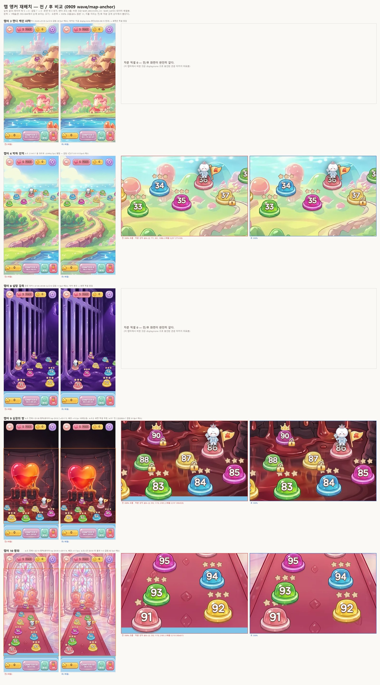</div></div>
<div class="tcard wait" id="pend-4"><div class="thd"><span class="n">4</span><b>젤리판 재질 5안 A~E</b><span class="lbl" style="background:#EEF0F4; color:#6E7886; border-radius:8px;padding:1px 9px">굽는 중(사용자 C 선택 + 시안 투명도 적용, 확인 뒤 푸시)</span></div><p class="focus"><b>초점</b> · B = 캐릭창 판 색(크로마 86, 어두운 배경 본문 3.11 미달) · C = 색감·대비 둘 다 통과</p><div style="margin-top:8px"><b style="color:#176EC8; font-size:12px; display:block;border-bottom:2px solid #176EC8; padding-bottom:3px; margin-bottom:5px">제안 — 5안 A~E 한 장 (폰 세로)</b>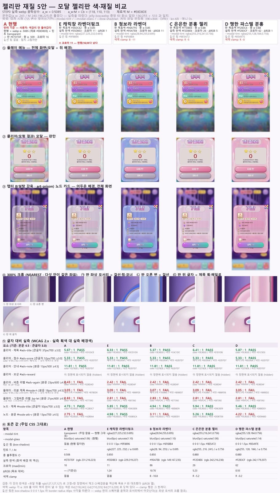</div></div>
<div class="tcard wait" id="pend-9"><div class="thd"><span class="n">9</span><b>챕터 배경 4장 배선 + 앵커</b><span class="lbl" style="background:#EEF0F4; color:#6E7886; border-radius:8px;padding:1px 9px">굽는 중(사용자 반려: 노드 원반이 위 잘린 폐기 자산 → 정본 교체 중)</span></div><p class="focus"><b>초점</b> · 새 배경 4장 전면 배선 + 40노드 path 띠 안 재배치, 겹침 0 · HUD 침범 0 (납품 시트는 scratchpad/order-map-bg/DELIVERY-COMPARE.png)</p><div style="margin-top:8px"><b style="color:#176EC8; font-size:12px; display:block;border-bottom:2px solid #176EC8; padding-bottom:3px; margin-bottom:5px">지금 | 제안 (한 장 대조 컷)</b>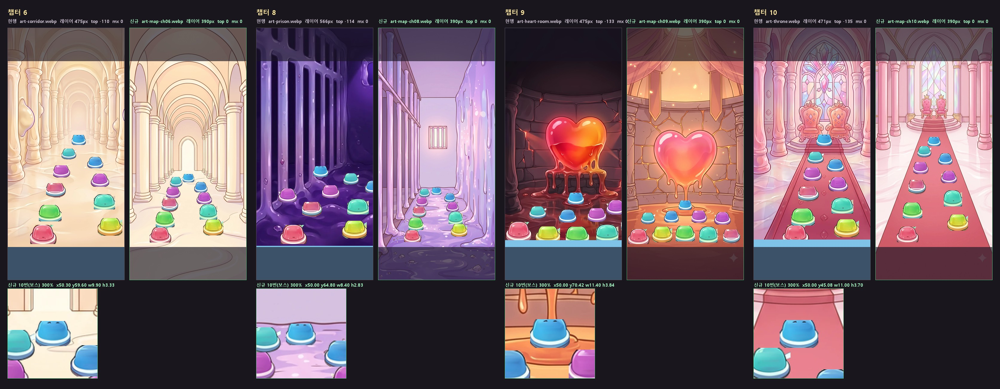</div></div>
<div class="tcard wait" id="pend-16"><div class="thd"><span class="n">16</span><b>펫 2종 같은 blob 에셋 발주 (썩싹 · 반짝)</b><span class="lbl" style="background:#EEF0F4; color:#6E7886; border-radius:8px;padding:1px 9px">굽는 중</span></div><p class="focus"><b>초점</b> · 펫 2종이 서로 다른 blob 을 쓰고 있어 같은 규격으로 재발주해야 한다. 발주서만 쓰면 바로 나감.</p><div style="margin-top:8px"><b style="color:#176EC8; font-size:12px; display:block;border-bottom:2px solid #176EC8; padding-bottom:3px; margin-bottom:5px">제안 — 대조 컷 아직</b><div style="border:2px solid #D2D8E0; border-radius:10px; background:#E4E7EC;color:#8C949E; text-align:center; padding:26px 10px; font-size:13px">굽는 중 — 대조 컷 아직<br><span style="font-size:11.5px">scratchpad/pets-0910/COMPARE.png</span></div></div></div>
<div class="tcard wait" id="pend-17"><div class="thd"><span class="n">17</span><b>펫 스탯 4레버 미연결 + 파편 화폐</b><span class="lbl" style="background:#EEF0F4; color:#6E7886; border-radius:8px;padding:1px 9px">설계 초안 완료(DESIGN §16, e31f3fb)</span></div><p class="focus"><b>초점</b> · 펫 스탯 4레버 + 파편 화폐 설계 초안 완료 — DESIGN.md §16(e31f3fb). 구현 파도 W1~W4 는 28 완성도 계획과 함께 착수한다.</p><div style="margin-top:8px"><b style="color:#176EC8; font-size:12px; display:block;border-bottom:2px solid #176EC8; padding-bottom:3px; margin-bottom:5px">제안 — 대조 컷 아직</b><div style="border:2px solid #D2D8E0; border-radius:10px; background:#E4E7EC;color:#8C949E; text-align:center; padding:26px 10px; font-size:13px">설계 초안 완료(DESIGN §16, e31f3fb) — 대조 컷 아직<br><span style="font-size:11.5px"></span></div></div></div>
<div class="tcard wait" id="pend-20"><div class="thd"><span class="n">20</span><b>미사용 카탈로그 249파일 처분 + 모험 깃발 아이콘 발주</b><span class="lbl" style="background:#EEF0F4; color:#6E7886; border-radius:8px;padding:1px 9px">굽는 중</span></div><p class="focus"><b>초점</b> · site/catalog 에 아무 데도 안 물린 249파일. 지우면 되돌리기 어렵다 — 승인 필요. 모험 깃발 아이콘은 신규 발주 1건.</p><div style="margin-top:8px"><b style="color:#176EC8; font-size:12px; display:block;border-bottom:2px solid #176EC8; padding-bottom:3px; margin-bottom:5px">제안 — 대조 컷 아직</b><div style="border:2px solid #D2D8E0; border-radius:10px; background:#E4E7EC;color:#8C949E; text-align:center; padding:26px 10px; font-size:13px">굽는 중 — 대조 컷 아직<br><span style="font-size:11.5px"></span></div></div></div>
<div class="tcard wait" id="pend-21"><div class="thd"><span class="n">21</span><b>젤리판 죽은 스타일 블록</b><span class="lbl" style="background:#EEF0F4; color:#6E7886; border-radius:8px;padding:1px 9px">굽는 중(4와 한 파도)</span></div><p class="focus"><b>초점</b> · 두 번째 &lt;style id=jelly-box-core&gt;가 앞 style 미닫힘으로 무효 — 4번 재질 결정과 함께 수리(코드)</p><div style="margin-top:8px"><b style="color:#176EC8; font-size:12px; display:block;border-bottom:2px solid #176EC8; padding-bottom:3px; margin-bottom:5px">제안 — 대조 컷 아직</b><div style="border:2px solid #D2D8E0; border-radius:10px; background:#E4E7EC;color:#8C949E; text-align:center; padding:26px 10px; font-size:13px">굽는 중(4와 한 파도) — 대조 컷 아직<br><span style="font-size:11.5px"></span></div></div></div>
<div class="tcard wait" id="pend-23"><div class="thd"><span class="n">23</span><b>챕터 미니맵 모달</b><span class="lbl" style="background:#EEF0F4; color:#6E7886; border-radius:8px;padding:1px 9px">굽는 중</span></div><p class="focus"><b>초점</b> · chapter-minimap 파도가 site/tentwin.html 에서 작업 중 — 대조 컷은 그 파도가 끝나면 이 번호로 붙는다.</p><div style="margin-top:8px"><b style="color:#176EC8; font-size:12px; display:block;border-bottom:2px solid #176EC8; padding-bottom:3px; margin-bottom:5px">제안 — 대조 컷 아직</b><div style="border:2px solid #D2D8E0; border-radius:10px; background:#E4E7EC;color:#8C949E; text-align:center; padding:26px 10px; font-size:13px">굽는 중 — 대조 컷 아직<br><span style="font-size:11.5px"></span></div></div></div>
<div class="tcard wait" id="pend-24"><div class="thd"><span class="n">24</span><b>캐릭창 사이드바 스킨·필살기 탭 삭제 + 아이템 선택(장착)</b><span class="lbl" style="background:#EEF0F4; color:#6E7886; border-radius:8px;padding:1px 9px">굽는 중</span></div><p class="focus"><b>초점</b> · 사이드바를 스킨 탭으로 바꾸고 필살기 탭은 없앤다 + 아이템 선택(장착) 자리를 만든다. 대조 컷은 파도가 끝나면 이 번호로 붙는다.</p><div style="margin-top:8px"><b style="color:#176EC8; font-size:12px; display:block;border-bottom:2px solid #176EC8; padding-bottom:3px; margin-bottom:5px">제안 — 대조 컷 아직</b><div style="border:2px solid #D2D8E0; border-radius:10px; background:#E4E7EC;color:#8C949E; text-align:center; padding:26px 10px; font-size:13px">굽는 중 — 대조 컷 아직<br><span style="font-size:11.5px">scratchpad/charsel-items/COMPARE.png</span></div></div></div>
<div class="tcard wait" id="pend-25"><div class="thd"><span class="n">25</span><b>각성/필살기 개념 분리 (문구·아이콘·폭발력 조건 통일)</b><span class="lbl" style="background:#EEF0F4; color:#6E7886; border-radius:8px;padding:1px 9px">굽는 중</span></div><p class="focus"><b>초점</b> · 각성과 필살기가 같은 말처럼 섞여 있다 — 문구·아이콘·폭발력 조건을 한 벌로 통일한다. 사용자 위임 건이라 완료되면 바로 푸시하고 「푸시됨」으로 내린다. 각성 중 HUD 얼굴 캡슐 글로우 포함(14 흡수 — 둥근 캡슐 글로우로 재구현).</p><div style="margin-top:8px"><b style="color:#176EC8; font-size:12px; display:block;border-bottom:2px solid #176EC8; padding-bottom:3px; margin-bottom:5px">제안 — 대조 컷 아직</b><div style="border:2px solid #D2D8E0; border-radius:10px; background:#E4E7EC;color:#8C949E; text-align:center; padding:26px 10px; font-size:13px">굽는 중 — 대조 컷 아직<br><span style="font-size:11.5px">scratchpad/awaken-naming/COMPARE.png</span></div></div></div>
<div class="tcard wait" id="pend-26"><div class="thd"><span class="n">26</span><b>아케이드·타임러시·데일리 상단바를 정본 HUD 판으로 통일</b><span class="lbl" style="background:#EEF0F4; color:#6E7886; border-radius:8px;padding:1px 9px">굽는 중</span></div><p class="focus"><b>초점</b> · 세 모드 상단바가 제각각 — 정본 HUD 판(파란 젤리 판 + 분홍 정지 버튼)으로 통일한다. 10번 정지 버튼 44px 은 이 건에 흡수됐다. 지휘자 확인 뒤 푸시 예정.</p><div style="margin-top:8px"><b style="color:#176EC8; font-size:12px; display:block;border-bottom:2px solid #176EC8; padding-bottom:3px; margin-bottom:5px">제안 — 대조 컷 아직</b><div style="border:2px solid #D2D8E0; border-radius:10px; background:#E4E7EC;color:#8C949E; text-align:center; padding:26px 10px; font-size:13px">굽는 중 — 대조 컷 아직<br><span style="font-size:11.5px">scratchpad/hud-unify/COMPARE.png</span></div></div></div>
<div class="tcard wait" id="pend-27"><div class="thd"><span class="n">27</span><b>위화감 감사 — 전 화면×전 모드 부품 대조</b><span class="lbl" style="background:#EEF0F4; color:#6E7886; border-radius:8px;padding:1px 9px">굽는 중</span></div><p class="focus"><b>초점</b> · 전 화면 × 전 모드를 정본 부품과 나란히 놓고 옛 부품이 남은 자리를 전량 목록으로 뽑는다 + 정본 부품 강제 관문(canon-check) 을 만든다.</p><div style="margin-top:8px"><b style="color:#176EC8; font-size:12px; display:block;border-bottom:2px solid #176EC8; padding-bottom:3px; margin-bottom:5px">제안 — 대조 컷 아직</b><div style="border:2px solid #D2D8E0; border-radius:10px; background:#E4E7EC;color:#8C949E; text-align:center; padding:26px 10px; font-size:13px">굽는 중 — 대조 컷 아직<br><span style="font-size:11.5px">scratchpad/consistency-0910/SHEET.png</span></div></div></div>
<div class="tcard wait" id="pend-28"><div class="thd"><span class="n">28</span><b>완성도 최상급 계획 — 밸런스·경제·장르 표준 대비 결손</b><span class="lbl" style="background:#EEF0F4; color:#6E7886; border-radius:8px;padding:1px 9px">굽는 중</span></div><p class="focus"><b>초점</b> · 100탄 봇 시뮬 밸런스 · 경제 흐름 · 장르 표준 대비 결손 · 상식 위배 목록을 뽑아 지휘자 결정 표로 만든다. 결정 뒤 구현 파도는 번호 29~ 로 분기한다. 산출 scratchpad/balance-0910/REPORT.md · scratchpad/design-audit-0910/AUDIT.md</p><div style="margin-top:8px"><b style="color:#176EC8; font-size:12px; display:block;border-bottom:2px solid #176EC8; padding-bottom:3px; margin-bottom:5px">제안 — 대조 컷 아직</b><div style="border:2px solid #D2D8E0; border-radius:10px; background:#E4E7EC;color:#8C949E; text-align:center; padding:26px 10px; font-size:13px">굽는 중 — 대조 컷 아직<br><span style="font-size:11.5px">scratchpad/design-audit-0910/AUDIT.md</span></div></div></div>
<div class="tcard wait" id="pend-29"><div class="thd"><span class="n">29</span><b>메뉴 설명 문구 잘림 수정 (클래식 3행 · 감사 D3 · 순위 7)</b><span class="lbl" style="background:#EEF0F4; color:#6E7886; border-radius:8px;padding:1px 9px">굽는 중</span></div><p class="focus"><b>초점</b> · 6번 메뉴 통합은 실루엣 반려로 보류. 그 가지에서 설명 문구가 「…」로 잘리던 것만 떼어 별도 파도로 고친다 — 클래식 3행 · 감사 D3 · 순위 7.</p><div style="margin-top:8px"><b style="color:#176EC8; font-size:12px; display:block;border-bottom:2px solid #176EC8; padding-bottom:3px; margin-bottom:5px">제안 — 대조 컷 아직</b><div style="border:2px solid #D2D8E0; border-radius:10px; background:#E4E7EC;color:#8C949E; text-align:center; padding:26px 10px; font-size:13px">굽는 중 — 대조 컷 아직<br><span style="font-size:11.5px"></span></div></div></div>
<div class="tcard wait" id="pend-30"><div class="thd"><span class="n">30</span><b>관제탑 킷 판 → 스톡 킷 시트 형식으로 재제작</b><span class="lbl" style="background:#EEF0F4; color:#6E7886; border-radius:8px;padding:1px 9px">굽는 중</span></div><p class="focus"><b>초점</b> · [조립 화면 | 에셋 격자] 그림만 — 화면군 5 + 창고, 부품은 실렌더. 산출 scratchpad/kit-sheet/. 사용자 지시 건이라 나오면 바로 푸시한다.</p><div style="margin-top:8px"><b style="color:#176EC8; font-size:12px; display:block;border-bottom:2px solid #176EC8; padding-bottom:3px; margin-bottom:5px">제안 — 대조 컷 아직</b><div style="border:2px solid #D2D8E0; border-radius:10px; background:#E4E7EC;color:#8C949E; text-align:center; padding:26px 10px; font-size:13px">굽는 중 — 대조 컷 아직<br><span style="font-size:11.5px">scratchpad/kit-sheet/</span></div></div></div>
<div class="tcard wait" id="pend-31"><div class="thd"><span class="n">31</span><b>플랫폼 분기 실행 규격 (웹/앱 빌드 플래그 · TWA 감지)</b><span class="lbl" style="background:#EEF0F4; color:#6E7886; border-radius:8px;padding:1px 9px">굽는 중</span></div><p class="focus"><b>초점</b> · 웹과 앱이 같은 소스에서 갈리게 하는 실행 규격 — 빌드 플래그와 TWA 감지 지점을 못박는다. 설계 단계.</p><div style="margin-top:8px"><b style="color:#176EC8; font-size:12px; display:block;border-bottom:2px solid #176EC8; padding-bottom:3px; margin-bottom:5px">제안 — 대조 컷 아직</b><div style="border:2px solid #D2D8E0; border-radius:10px; background:#E4E7EC;color:#8C949E; text-align:center; padding:26px 10px; font-size:13px">굽는 중 — 대조 컷 아직<br><span style="font-size:11.5px"></span></div></div></div>
<div class="tcard wait" id="pend-32"><div class="thd"><span class="n">32</span><b>앱 인트로 · 로딩 화면</b><span class="lbl" style="background:#EEF0F4; color:#6E7886; border-radius:8px;padding:1px 9px">굽는 중</span></div><p class="focus"><b>초점</b> · 앱 첫 실행 인트로와 로딩 화면. 설계 → 구현.</p><div style="margin-top:8px"><b style="color:#176EC8; font-size:12px; display:block;border-bottom:2px solid #176EC8; padding-bottom:3px; margin-bottom:5px">제안 — 대조 컷 아직</b><div style="border:2px solid #D2D8E0; border-radius:10px; background:#E4E7EC;color:#8C949E; text-align:center; padding:26px 10px; font-size:13px">굽는 중 — 대조 컷 아직<br><span style="font-size:11.5px"></span></div></div></div>
<div class="tcard wait" id="pend-33"><div class="thd"><span class="n">33</span><b>앱 전용 상점 (보석 경제 · 번들 · 광고 보상 · Play Billing 연결점)</b><span class="lbl" style="background:#EEF0F4; color:#6E7886; border-radius:8px;padding:1px 9px">굽는 중</span></div><p class="focus"><b>초점</b> · 보석 경제 · 번들 · 광고 보상 · Play Billing 연결점을 설계하고 구현한다. 실결제 연결은 2차.</p><div style="margin-top:8px"><b style="color:#176EC8; font-size:12px; display:block;border-bottom:2px solid #176EC8; padding-bottom:3px; margin-bottom:5px">제안 — 대조 컷 아직</b><div style="border:2px solid #D2D8E0; border-radius:10px; background:#E4E7EC;color:#8C949E; text-align:center; padding:26px 10px; font-size:13px">굽는 중 — 대조 컷 아직<br><span style="font-size:11.5px"></span></div></div></div>
<p class="focus" style="margin-top:14px"><b>지휘자 결정 1건</b> · 근거를 적어 결정했다 — 뒤집을 때만 한 줄</p>
<div class="tcard dec" id="pend-2"><div class="thd"><span class="n">2</span><b>캐릭창 맨 아래 두 버튼 — 코드 젤리 vs S10 그림 틀</b><span class="lbl" style="background:#EEF0F4; color:#6E7886; border-radius:8px;padding:1px 9px">지휘자 결정(A 코드 젤리 유지)</span></div><p class="focus"><b>초점</b> · §4 판정: 규칙 기하는 code. S10 그림 틀은 잘림·재추적 위험이 있어 쓰지 않는다. 「스킨」·「선택완료」 두 버튼은 지금의 코드 젤리를 유지한다.</p><span class="stamp"><span>결정 ▸</span><span>A 코드 젤리 유지 — 뒤집으려면 「B 그림 틀」 한 줄</span></span><div style="margin-top:8px"><b style="color:#176EC8; font-size:12px; display:block;border-bottom:2px solid #176EC8; padding-bottom:3px; margin-bottom:5px">A 코드 젤리(지금) | B S10 그림 버튼 틀(제안)</b>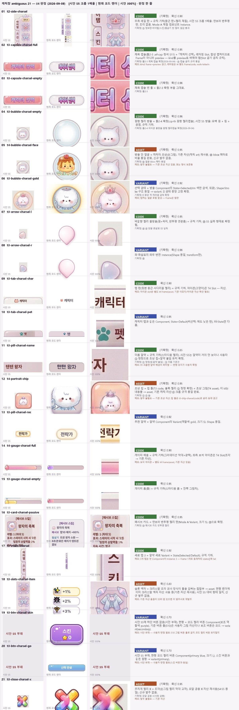</div></div>
<p class="focus" style="margin-top:14px"><b>보류 1건</b> · 사용자가 보류시킨 것 — 다시 꺼낼 때만 한 줄</p>
<div class="tcard wait" id="pend-6"><div class="thd"><span class="n">6</span><b>메뉴 한 장 통합</b><span class="lbl" style="background:#EEF0F4; color:#6E7886; border-radius:8px;padding:1px 9px">보류(사용자 2026-09-10: 실루엣 반려)</span></div><p class="focus"><b>초점</b> · 세 장→한 장, 기본/클래식 탭, 대전은 줄 안 펼침, 설명 잘림 0, 데스크톱 겹침 해소</p><p class="focus" style="color:var(--accent)">※ 설명 문구 잘림 수정(클래식 3행 「…」·감사 D3·순위 7)만 29번으로 분리</p><div style="margin-top:8px"><b style="color:#176EC8; font-size:12px; display:block;border-bottom:2px solid #176EC8; padding-bottom:3px; margin-bottom:5px">지금 | 제안 (한 장 대조 컷)</b>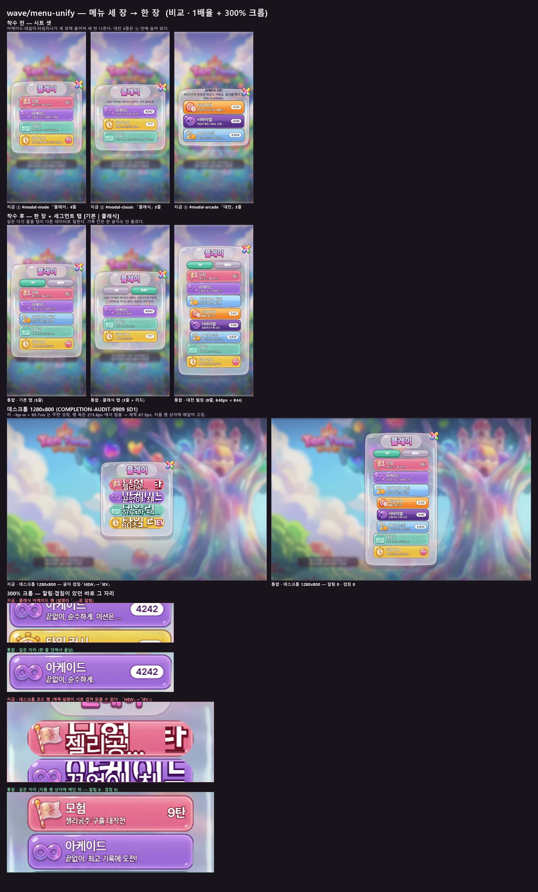</div></div>
</section>
<section class="today" id="z-today">
<b class="th">오늘 판정 3건</b><span class="lbl">2026-09-09 · 오늘 판정 3건 — 게임 외형이 걸린 것만. ①(그림 버튼)은 통과·병합돼 아래 「푸시됨」으로 내렸고, ②(맵 앵커)가 새 판정. 나머지는 「지휘자 결정」·「푸시됨」에</span>
<div class="tcard" id="today-1"><div class="thd"><span class="n">1</span><b>② 맵 앵커 재배치 — 챕터 4·9·10 노드가 x 21~46%에 몰려 겹침·잘림</b><span class="lbl">데이터 S(노드 좌표)만 수정 · 배경·부품·다른 화면 무접촉 · scratchpad/map-anchor</span></div><p class="focus"><b>초점</b> · 챕터 4·9·10 노드 겹침 7→0·잘림 5→0, 다른 화면 픽셀 0</p><span class="stamp"><span>됐다 ☐</span><span>아니다 ☐</span><span>판정 대기</span></span></div>
<div class="tcard" id="today-2"><div class="thd"><span class="n">2</span><b>③ 캐릭창 맨 아래 두 버튼 — 코드 젤리 variant인가, S10 그림 버튼 틀인가</b><span class="lbl">verdicts.charsel.json · 21개 중 19개는 규칙 판정 끝(code 11 · asset 4 · variant 6) · 남은 건 이 2개</span></div><p class="focus"><b>초점</b> · 「스킨」·「선택완료」 버튼만 판정해 주세요. 지금 = 코드 젤리 버튼(variant, 겉선·재질이 엔진 레시피) / 대안 = S10 그림 버튼 틀(①과 같은 이미지판, 캐릭창 폭에 맞춰 9슬라이스). 나머지 19건은 시안 S5 크롭 1배율 근거로 이미 확정 — 뒤집을 것만 말해 주세요.</p><span class="stamp"><span>됐다 ☐</span><span>아니다 ☐</span><span>판정 대기</span></span></div>
<div class="tcard" id="today-3"><div class="thd"><span class="n">3</span><b>⑥⑦ 바깥에 보이는 얼굴 2장 — 앱 아이콘(512) + 링크 공유 카드(1200×630)</b><span class="lbl">site/catalog/pwa-icon-512.png · site/catalog/og-card.jpg · 출시 세팅 b9c76fa · 새로 그린 그림 0(확정 자산 코드 조립)</span></div><p class="focus"><b>초점</b> · 둘 다 하늘 틀(Mode B) + 젤리팡 레터링 + 트윈·텐 얼굴 조립 — 한 번에 판정. 위 = 홈 화면에 박히는 아이콘(작게 줄었을 때 얼굴이 읽히는지), 아래 = 카톡·문자로 링크 보낼 때 뜨는 첫인상. 「됐다」면 그대로 출시 세팅에 박히고, 「아니다」면 어느 쪽 어디가 걸리는지 한 줄.</p><span class="stamp"><span>됐다 ☐</span><span>아니다 ☐</span><span>판정 대기</span></span>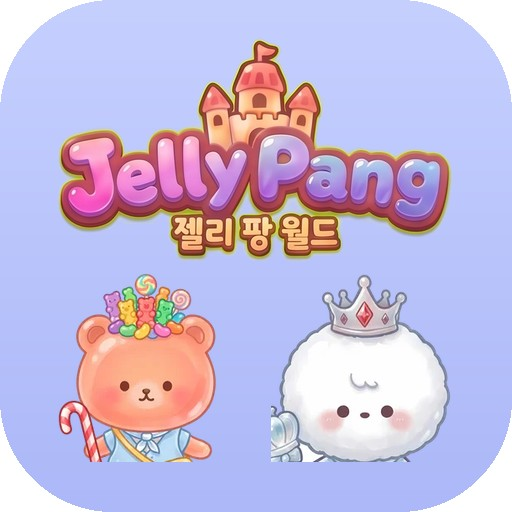</div>
<div class="tcard dec" id="today-dec"><div class="thd"><span class="n">결정</span><b>지휘자 결정(근거)</b><span class="lbl">오늘 판정에서 뺀 6건 — 사용자 시간을 안 쓰고 지휘자가 정함</span></div><table class="ptbl"><tr><th>건</th><th>결정</th><th>근거</th></tr><tr><td>② 재질 시험판 v2 (material-test.html)</td><td>확정</td><td>정본 엔진 인스턴스일 뿐 — 아직 어느 화면에도 안 쓰임. 쓰이기 전까지 게임 외형 무변이고, 겉선 굵기 48칸 실측은 통과. 실제로 배선되는 순간 그 화면에서 판정.</td></tr><tr><td>④ 구운 자산 20개 벡터 재렌더 프레임</td><td>창고 보관</td><td>미배선 — 게임에 안 들어감. 손그림 광택 결 미재현·스캘럽 배지 편차는 배선을 결정할 때 그 화면에서 다시 본다. 지금 판정하면 안 쓸 것을 판정하는 셈.</td></tr><tr><td>⑤ 관제탑 5방 디자인 톤</td><td>유지</td><td>관제탑은 우리 내부 도구 — 게임 외형과 무관. 서체·액센트는 이미 게임 토큰을 그대로 쓰고 있어 어긋날 여지가 없음. 사용자 시간을 쓸 자리가 아님.</td></tr><tr><td>⑧ 각성(폭주) 글로우 복귀</td><td>보류</td><td>복원된 건 원 설계값 그대로지만 모양이 상자형 — 각성은 「임팩트 명령」에서 폭발 연출로 통째 재작업 예정이라, 상자형을 지금 확정하면 두 번 판정하게 됨. 재작업 때 원형·폭발과 함께 올림.</td></tr><tr><td>⑨ 노드 카드 「시간 단축」 칩</td><td>복귀</td><td>표시만 바뀜 — 시간 값은 이미 단계표에 반영돼 있어 계수 이중 적용 없음(코드 확인). 캡처가 없는 이유는 노드 카드 진입 하네스 부재일 뿐, 위험이 아님. 다음 파도에 푸시.</td></tr><tr><td>착수 후보 (다음에 뭘 하나)</td><td>사용자 선택 대기</td><td>맵 앵커 + 챕터 배경 발주 · 카탈로그 정리 · 실플레이 3판(이건 사용자 시간이 필요). 셋 중 무엇부터인지만 정해 주시면 나머지는 지휘자가 굴립니다.</td></tr><tr><td>배경 발주 B안 · 메뉴 통합</td><td>진행 중</td><td>배경 = 전용 방 4장 진행(챕터별 크롭 에셋) · 메뉴 통합 = 실화면 준비 중, 준비되면 승인 대기 카드로 올림.</td></tr></table><p class="focus">이 6줄은 도장 칸이 없습니다 — 이미 정했다는 뜻입니다. 뒤집고 싶은 줄이 있으면 번호만 말해 주세요, 다음 회차에 판정 카드로 되돌립니다.</p></div>
<div class="tcard pushed"><div class="thd"><span class="n">푸시됨</span><b>⑦ 클래식 데드락 「추가」 복원 — main 086c464</b><span class="lbl">DESIGN.md §12 원조 넘버매치 규칙 · scratchpad/classic-add</span></div><p class="focus">데드락에서 「추가」가 다시 뜬다(원조 넘버매치 규칙). 버튼 실측·바 300% 통과 — 지시 대기에서 내려온 건.</p>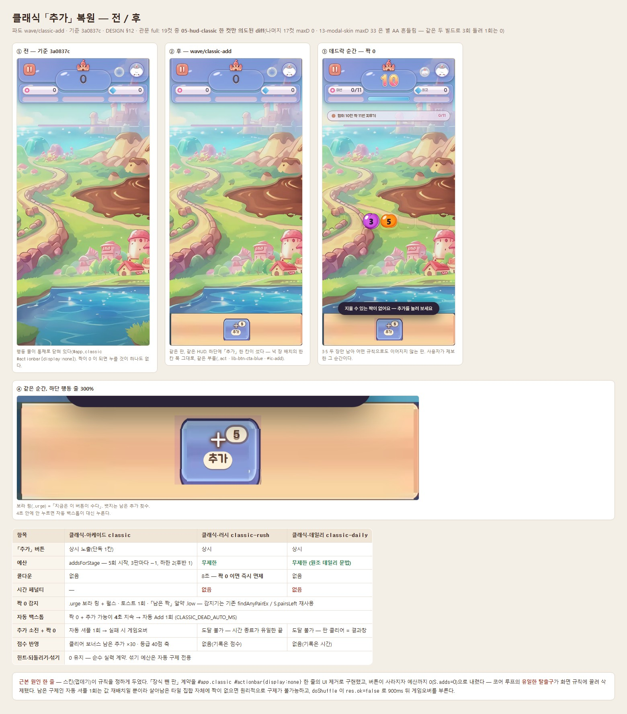</div>
<div class="tcard pushed"><div class="thd"><span class="n">푸시됨</span><b>⑧ 능력치 설명 UI (ⓘ 칩 + 말풍선) — main b80f689</b><span class="lbl">DESIGN.md §11 · statMult 분기 원문 노출 · scratchpad/stat-info</span></div><p class="focus">ⓘ 칩을 눌러 능력치 원문을 말풍선으로 — statMult 분기 그대로. 스킨 차분(SKINDIFF)·확대(ZOOM) 별도 통과.</p>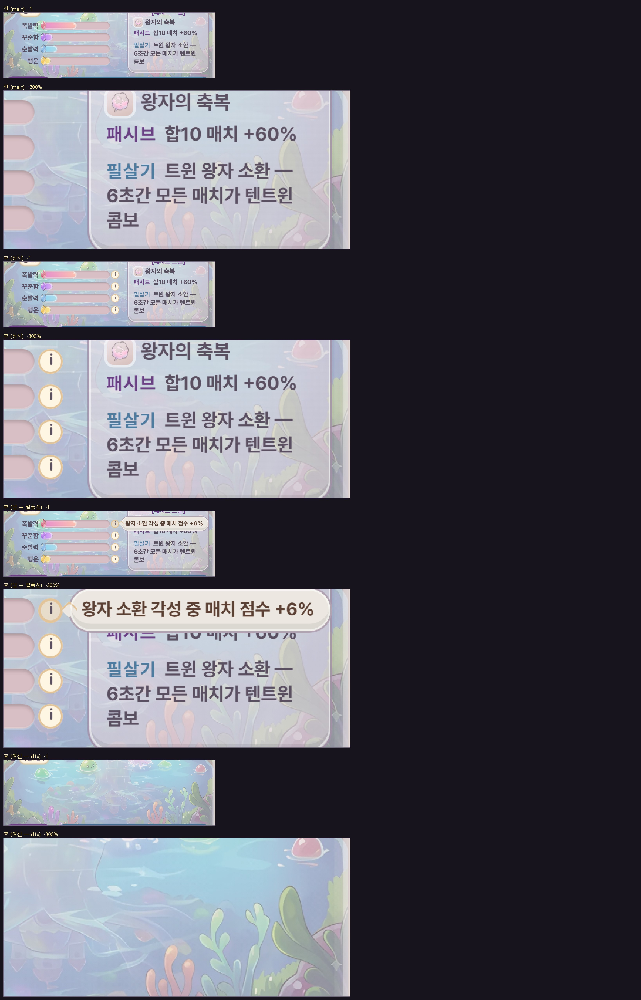</div>
<div class="tcard pushed"><div class="thd"><span class="n">푸시됨</span><b>⑤ 노드 모달 — 하트 겹침 · 얼굴 캡슐 · 제목 캡슐 — main 6eb539e</b><span class="lbl">t3-chip-node-hero / t3-chip-node-pet 등재 · 제목 캡슐 = HUD 캡슐 부품 재사용</span></div><p class="focus">하트 겹침 제거 · 얼굴 캡슐 2종 등재 · 제목 캡슐을 HUD 캡슐 부품으로 통일. 지시 대기 ⑤에서 내려온 건.</p>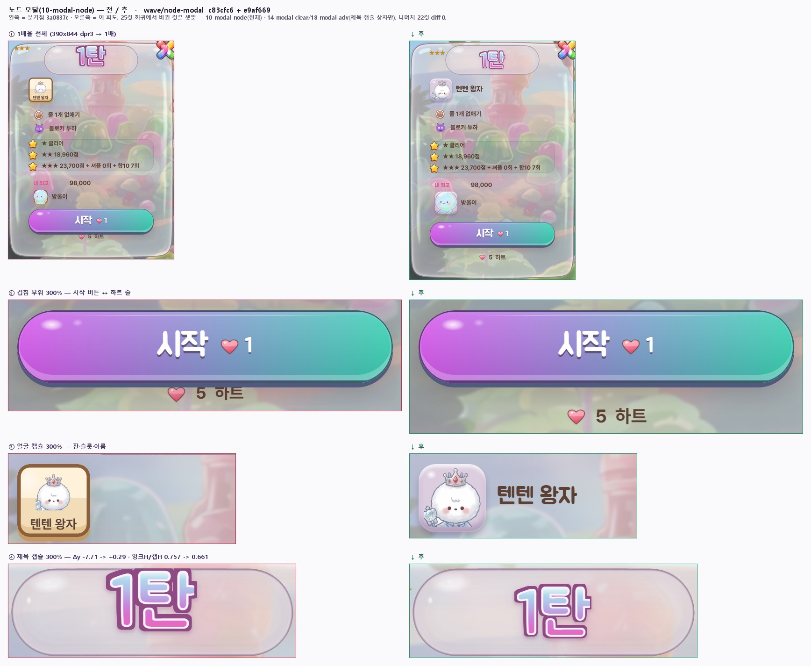</div>
<div class="tcard pushed"><div class="thd"><span class="n">푸시됨</span><b>⑪ 데스크톱 튜토리얼 갇힘 · 1280 컷 — main 02a1bf8</b><span class="lbl">감사 0909 신규 결함 · scratchpad/desktop</span></div><p class="focus">1280에서 튜토리얼을 빠져나갈 수 없던 갇힘 해소 — 데스크톱 5컷 관문 통과.</p></div>
<div class="tcard pushed"><div class="thd"><span class="n">푸시됨</span><b>⑫ 문구-값 파생 · 공유 링크 · 전부 건너뛰기 · 펫 빈 상태 — main 44e226e</b><span class="lbl">scratchpad/copy-flow</span></div><p class="focus">카피가 실제 값에서 파생되게 · 공유 링크 · 튜토리얼 전부 건너뛰기 · 펫 빈 상태 문구 4건.</p></div>
<div class="tcard pushed"><div class="thd"><span class="n">푸시됨</span><b>⑬ 캐릭창 레이아웃 4건 (이름 · 사이드바 · 배지 · 화살표) — main 0f34b40</b><span class="lbl">사용자 「푸시해」 지시대로 병합 · layout 관문 FAIL 8→0 · 아침 확인용 대조 컷 첨부</span></div><p class="focus">이름 정렬 · 사이드바 간격 · 배지 겹침 0 · 화살표 시안 둥근 삼각. 지시대로 푸시했으니 아침에 이 컷으로 확인해 주세요.</p>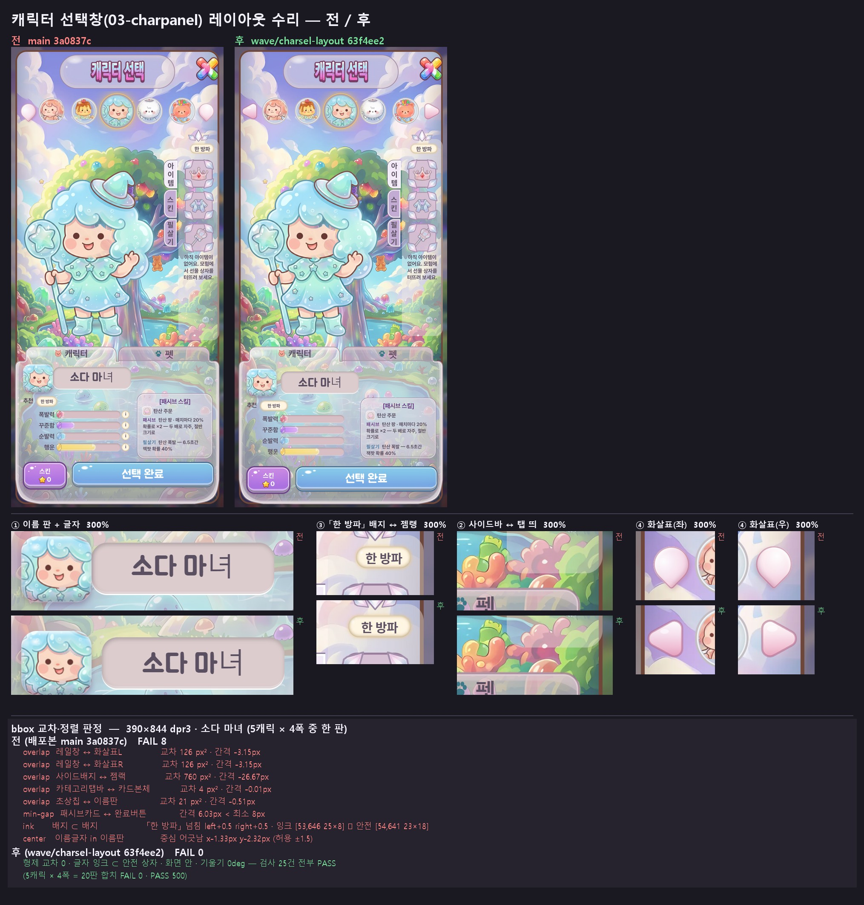</div>
<div class="tcard pushed"><div class="thd"><span class="n">푸시됨</span><b>부팅 lang 성능 — main b15db54</b><span class="lbl">비시각(perf) · 판정 대상 아님</span></div><p class="focus">부팅 시 lang 처리 경로 정리 — 외형 무변, 기록용 한 줄.</p></div>
<div class="tcard pushed"><div class="thd"><span class="n">푸시됨</span><b>① 그림 버튼 최종판 병합 b4eaca4 — 엔진 부품 t3-btn-picture 안 이미지판(4차) · 7탄 배선</b><span class="lbl">wave/btn-split → 병합 · 반려 4회 뒤 컴포넌트로 재구성 · 겉선 링 원본 보존 · NEW 여백 재추출 · 7탄 간격 7px · 설명 말줄임 0</span></div><p class="focus">부품을 먼저 개념화하고 이미지판을 그 형태 안 Fill 층으로 재구성 — 오른쪽 모서리 캡 곡률 무침식·NEW/N탄/제목/설명 배지 광택·7탄 붙음/각짐 0. [원본|렌더|차분] 300% 통과.</p>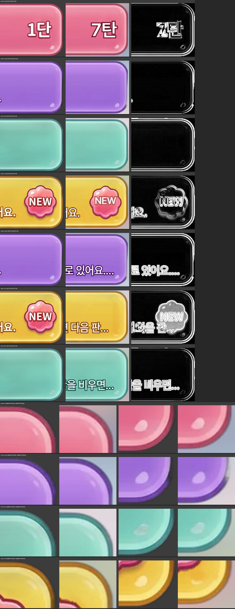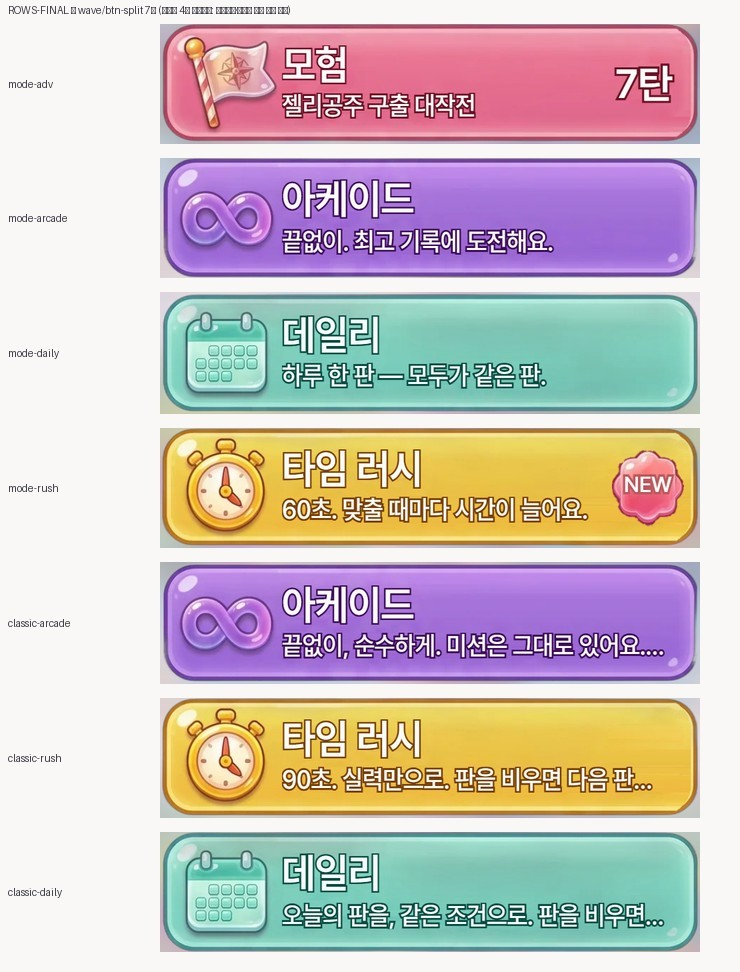</div>
<div class="tcard pushed"><div class="thd"><span class="n">푸시됨</span><b>클리어 모달 글자 — 판 무변, 글자만</b><span class="lbl">판·카드·블러 규격 유지 · 글자 층만 · scratchpad/modal-legibility</span></div><p class="focus">판 무변·글자만 — 뒤 보드 비침으로 안 읽히던 별·점수·문구를 안쪽 젤리 카드 위 글자 대비만 올려 복구(판 형태·색·블러는 그대로).</p>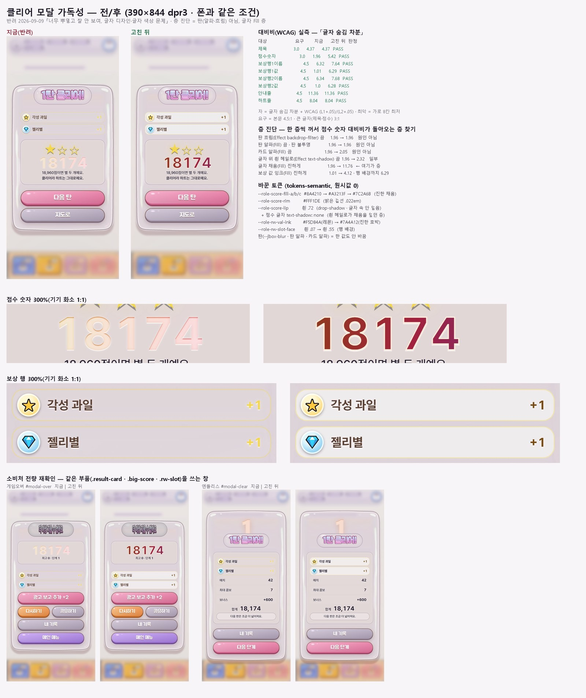</div>
<div class="tcard pushed"><div class="thd"><span class="n">푸시됨</span><b>뒤로가기 · 터치 · 44px — 하드웨어 뒤로가기 흡수 · 터치 타깃 44px 보장</b><span class="lbl">게임 외형 무변(동작·히트영역만) · 정본 하네스 픽셀 0</span></div><p class="focus">안드로이드 뒤로가기가 앱을 닫지 않고 모달·화면을 되돌리게 흡수, 작은 버튼 히트영역을 44px로 넓힘 — 외형은 한 픽셀도 안 바뀜.</p></div>
<div class="tcard pushed"><div class="thd"><span class="n">푸시됨</span><b>관제탑 3묶음 — 설비 5쪽 · 킷 시트 5쪽 · 공장 교체 구역 — 푸시됨</b><span class="lbl">b4d2599 설비 5쪽(규격·절차·문지기·기록·도구) · 5710fd6 킷 시트 5쪽(게임 화면 4 + 창고) · 9d1bd4f 공장 교체 구역 · 게임 외형 픽셀 0 (관제탑 문서·페이지만)</span></div><p class="focus">전부 관제탑(내부 도구)이라 게임은 한 픽셀도 안 바뀝니다. 검증 실측: 설비·킷·공장 모두 콘솔 error 0 · 실패 요청 0 · 깨진 이미지 0 · 미구현 0 · 가로 넘침 없음, 킷은 1280/390 두 폭 모두 라이브 부품 1/1(폴백 0), 공장은 인스턴스 20(크기 0 없음)·스니펫 6. 위 = 설비 첫 화면, 가운데 = 킷 시트 [사용자 시안 | 우리 창고] 대조, 아래 = 공장 교체 구역 머리. 「됐다」면 그대로 푸시합니다.</p>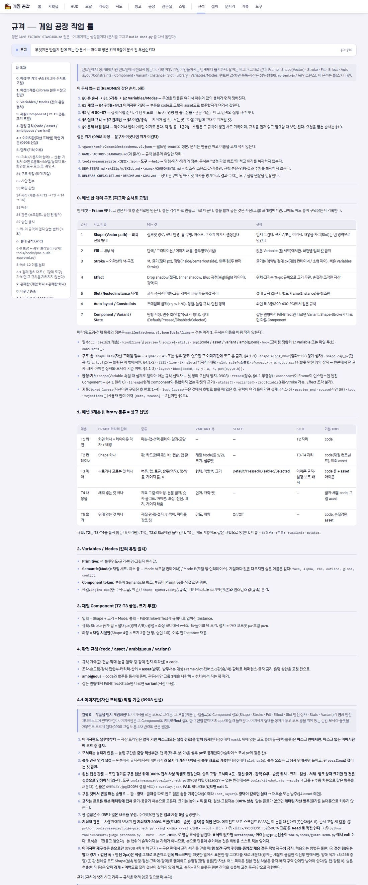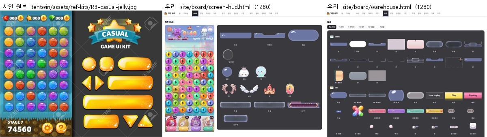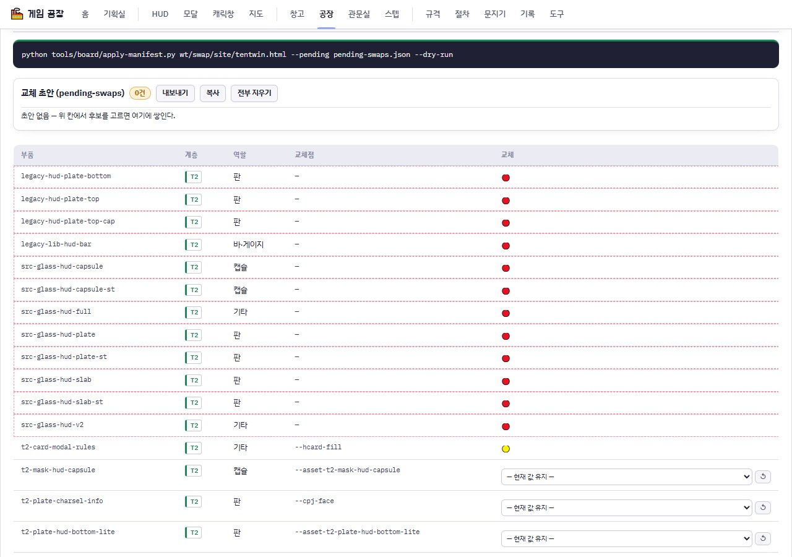</div>
<div class="tcard pushed"><div class="thd"><span class="n">푸시됨</span><b>게임 푸시 0474876 · 배포 확인 — 배포 방식 GitHub Actions 빌드(소스 4.9MB 불변 → 배포 문서 1.14MB) · 토큰 정규화 완료(CSS 커스텀 속성 원시색 359→0, 토큰 506, 픽셀 0) · 저장 데이터 이전기 · 캐릭창 21 프레임 배선 · 반려 3건·HUD 프레임판·기기 폴백·출시 세팅(PWA/오프라인/공유 메타) · 592c3d8(보드 행 상한 12→13 실측 근거 · isRush 도달 경로 판단 주석, 외형 무변)</b><span class="lbl">A 모험 [전|후|시안] · B 클래식 [전|후] · C 300% 3건 · D 겉선 단면 900% · 외형 픽셀 0(정규화·최적화·빌드 분리, 정본 하네스 19컷)</span></div><p class="focus">① 클래식에만 남은 옛 코드 젤리 덮개가 겉선 밖에 흰 림 → 은퇴 · ② 정지 버튼은 CSS만 달랐음 → 모험과 동일 · ③ 펫 자산에 구워진 남색 유리 방울 → 알파만 제거. 렉 원인: 문서 바이트(스플래시가 문서 끝) + 로드 직후 요청 폭풍(이미지 183장·배경음악 4곡 16.7MB) → 빌드 단계에서 본체 JS·뒤쪽 CSS 분리, 프리로더는 첫 터치 뒤. 아래 표는 배포본 실측(Lighthouse mobile).</p><table class="ptbl"><tr><th>항목</th><th>전</th><th>후</th></tr><tr><td>Lighthouse 성능</td><td>36</td><td><b>77</b></td></tr><tr><td>첫 화면(FCP)</td><td>8.2s</td><td><b>3.9s</b></td></tr><tr><td>긴 작업 합(TBT)</td><td>870ms</td><td><b>150ms</b></td></tr><tr><td>Speed Index</td><td>8.2s</td><td><b>4.5s</b></td></tr><tr><td>총 바이트</td><td>4.0MB</td><td><b>1.8MB</b></td></tr><tr><td>소스 → 배포 문서</td><td>4.9MB</td><td><b>1.14MB</b></td></tr></table>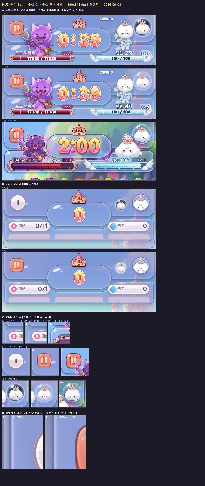</div>
<div class="tcard pushed"><div class="thd"><span class="n">푸시됨</span><b>기기 폴백 9건(be8056d) — 구형 폰(iOS 15·크롬 104급)에서 사라지던 맵 바·클래식 캡슐·캐릭창 판 복구</b><span class="lbl">폴백 강제 시뮬 [전|후] · 정상 브라우저 렌더 무변 · 콘솔 0</span></div><p class="focus">cqw·color-mix·shape·:has 없는 기기를 시뮬해 6화면 비교, 사라짐·깨짐 9곳에 @supports not 블록 1개(정본 변수만)로 복구.</p>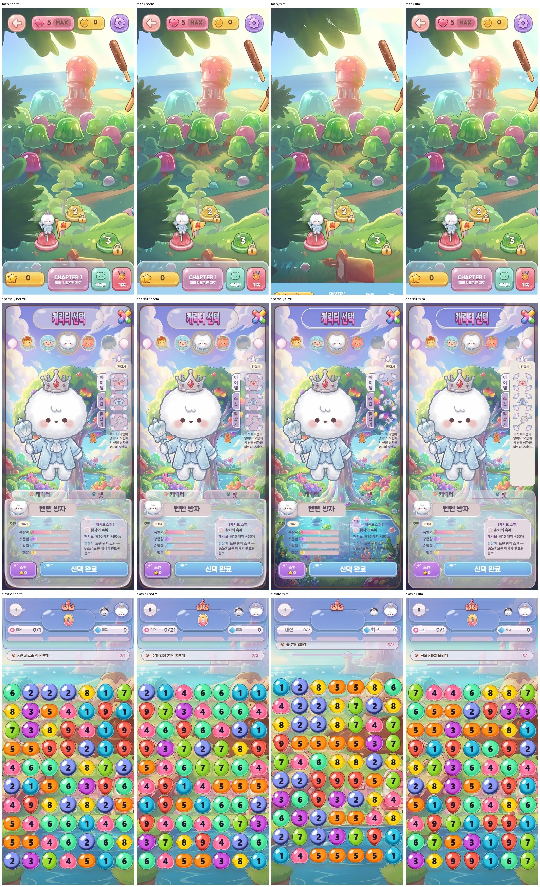</div>
<div class="tcard pushed"><div class="thd"><span class="n">푸시됨</span><b>관제탑 5방 라이브화 87a2a85 + 관문실 갱신 e6b153e — 이미지 조각 0개, 정본 CSS 라이브 부품 137 + 프레임 파일 원본, 화면은 게임 iframe</b><span class="lbl">[사용자 킷 시트 | 우리 창고 | HUD 화면 페이지] · check-live PASS(other 0) · 글 블록 0 · 관문실: done 45/1 · frames 26 · m3 10 · Lighthouse 77 · 배포 = Actions 빌드</span></div><p class="focus">흰 격자에 부품만, 이름 한 낱말+계층 배지. 미구현은 점선 자리에 🔴, 값만 맞춤은 테두리. 창고·공장 부품은 크기·틀·상태 전환이 실동작.</p><p class="focus"><a href="https://ghkd70408040-wq.github.io/game-factory-site/board/" target="_blank" rel="noopener">https://ghkd70408040-wq.github.io/game-factory-site/board/</a></p>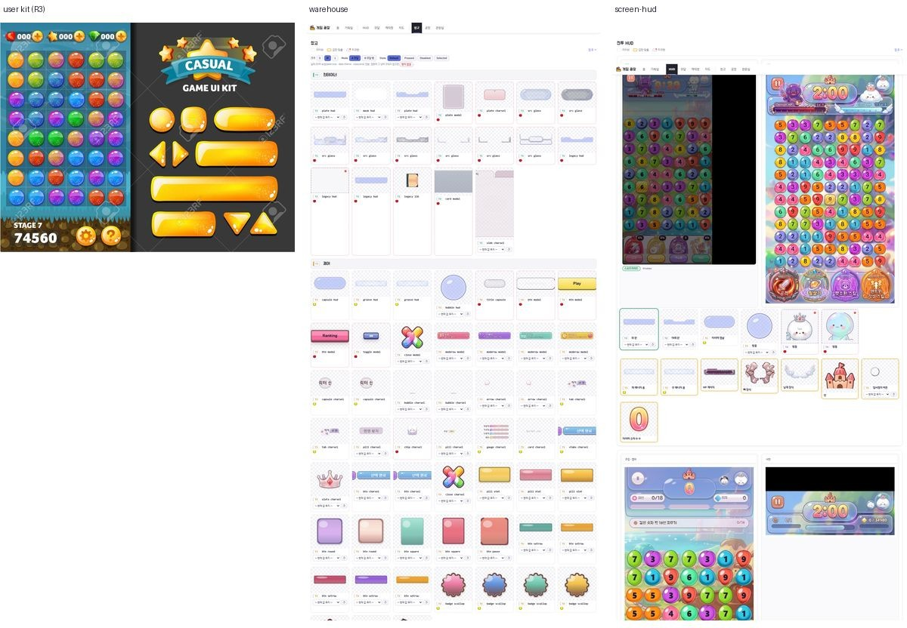</div>
<div class="tcard pushed"><div class="thd"><span class="n">푸시됨</span><b>관제탑 6번째 방 「스텝」 5d06f7f — 에셋 하나의 단계 튜토리얼</b><span class="lbl">예시 1 HUD 위 판 7단계(접수→분해·판정→재질→제작→배선→관문→판정·푸시) · 예시 2 그림 버튼 실패→원인 4→기준 8→관문 도구→재작업 중</span></div><p class="focus">카드마다 [입력 | 한 일 한 줄 | 산출 | 관문 원문 | 도구 명령]. 그림마다 출처 파일명. 전체는 링크(세로로 긺).</p><p class="focus"><a href="https://ghkd70408040-wq.github.io/game-factory-site/board/steps.html" target="_blank" rel="noopener">https://ghkd70408040-wq.github.io/game-factory-site/board/steps.html</a></p>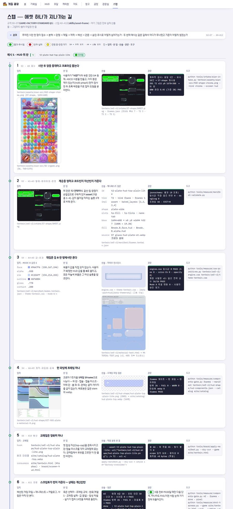</div>
<div class="tcard pushed"><div class="thd"><span class="n">푸시됨</span><b>지식 저장소 — 규격 §4.1 이미지판 작업 기준(원칙 0~9) · §9 문제 해결 절차 · 반복 실수 루프 감사·차단 도구 3</b><span class="lbl">GAME-FACTORY-STANDARD.md · DEV-STEPS.md · skills/asset-frame · COMPONENTS.md 동기 · tools/hooks·measure</span></div><p class="focus">문서와 도구만 — 게임 외형 무변.</p><ul class="focus"><li>원칙 0: 부품을 먼저 개념화한다 — 이미지판은 Component의 Fill/Effect 층일 뿐, Shape에 잘려 들어간다</li><li>원칙 1~9: 마스크 먼저·모서리 늘림 금지·슬롯 안전 상자 실측·원본 300% 겹침 관문·층별 추출·폰트 겹침 선택·재추출 우선·지휘자 300% 확인·재구성은 층으로만(행 보간·편평화 금지)</li><li>§9 문제 해결 절차 5단계: 근본 원인 실측 → 전문가 방식 조사 → 우리 방식 번역 → 같은 날 업로드+관문 도구화 → 반복 루프 검사 · 반려 2회면 방법을 의심</li><li>이미지 UI 버튼 전문가 방식 조사(Unity·Unreal·Godot·CSS·Figma): 9슬라이스 + 콘텐츠 패딩 + 글자·배지 별도 층 + 알파가 형태 소유 → 우리 규격 1:1 번역</li><li>반복 루프 감사: 14유형·41회, 미차단 5 → 차단 도구 3 구현: 푸시 승인 트레일러 훅(pixel-0/user-날짜/tooling) · 매니페스트 원칙 0 검증(mask·slot_safe 필수) · 전송 전 600% 자동 크롭(judge-precheck)</li></ul></div>
<div class="tcard pushed"><div class="thd"><span class="n">푸시됨 main 23d9719</span><b>앱 아이콘 512 · 공유 카드 1200×630 · 피처 그래픽 전신 누끼 (대장 3·15)</b><span class="lbl">scratchpad/share-card/SHEET.png · 대장 3·15</span></div><p class="focus">전신 누끼로 재조립, 얼굴 크롭 잘림 0. 스토어·공유 자산 3장을 한 벌로 맞췄다.</p>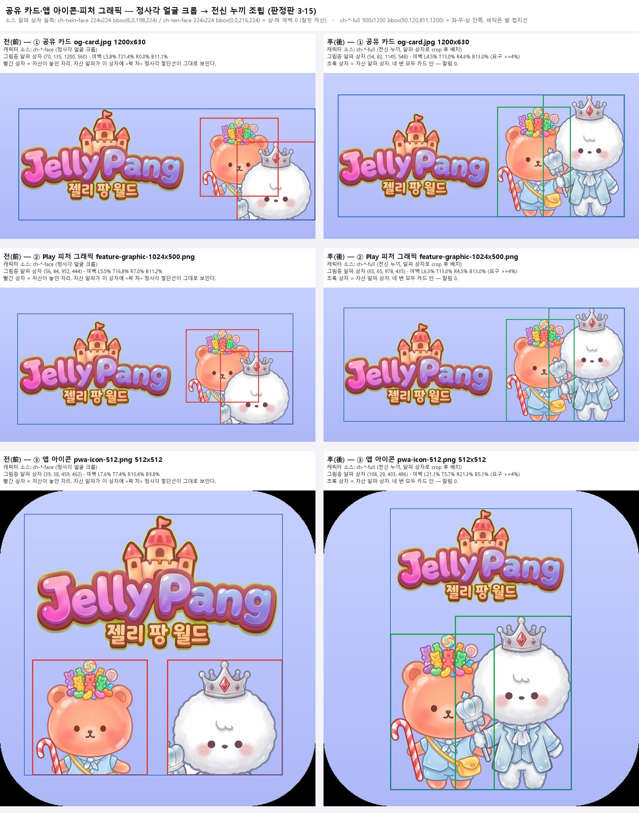</div>
<div class="tcard pushed"><div class="thd"><span class="n">푸시됨 main 1dcb46e</span><b>판정판 관제탑 이관 — 원본 해상도 그림·라이트박스 (대장 22)</b><span class="lbl">site/board/judge.html · tools/judge/build.py --target pages · 대장 22</span></div><p class="focus">그림 266장 30.9MB 를 원본 해상도 jpg 로 따로 굽고 &lt;img src&gt; 로 참조 — 카드를 누르면 전체화면(핀치 줌 · 1배↔맞춤 · 원본 열기). 폰 390 실측: 16px 미만 글자 0 · 가로 넘침 0 · broken img 0.</p></div>
</section>
<section class="today" id="z-gap">
<b class="th">게임 진행 — 착수 후보</b><span class="lbl">에셋 외 남은 일(GAME-GAP-0908) · 고르는 건 사용자</span>
<div class="tcard"><div class="thd"><span class="n">착수 순서</span><b>8월 지시분(폭주·피니시·각성 폭발·배율·펫 임팩트·노드 카드·보스 기술·난이도·하트·데일리·스트릭·공유)은 전부 코드에 구현됨 — 남은 건 검증과 후반 콘텐츠</b></div><table class="ptbl"><tr><th>순서</th><th>항목</th><th>도장</th></tr><tr><td class="num">1</td><td>실플레이 3판 플레이테스트 — 사용자 시간 필요. 타수표·꿀떡 base·폭주 문턱 판정이 전부 여기 걸림</td><td class="num">고른다 ☐</td></tr><tr><td class="num">2</td><td>맵 앵커 재배치(x 21~46%에 몰림) + 챕터 배경 채우기(10개 중 1개) — 데이터 S + 배경 크롭 에셋</td><td class="num">고른다 ☐</td></tr><tr><td class="num">3</td><td>아이템 파도 B3 — enabled:false 5건 켤지(사용자 결정) · 이중지급 P0는 wave/repair에서 수정 중</td><td class="num">고른다 ☐</td></tr><tr><td class="num">4</td><td>수리 큐 6건 — 각성 초상 글로우 누락·isRush 도달 불가·EB_ROWS_MAX·특수타일 챕터 게이트·timeCut 미반영·전투 액션바 라벨 (진행 중 wave/repair)</td><td class="num">고른다 ☐</td></tr><tr><td class="num">5</td><td>지역 테마 — region 0건, V4 §10 기획 확정 필요</td><td class="num">고른다 ☐</td></tr></table></div>
<div class="tcard pushed"><div class="thd"><span class="n">표</span><b>에셋 외 게임 진행 갭 표 45행 (GAME-GAP-0908)</b></div>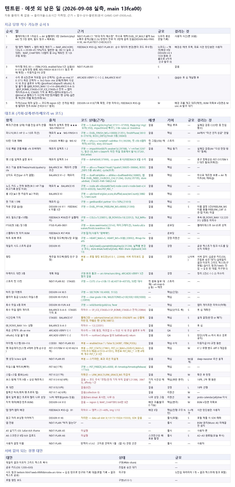</div>
</section>
<section class="comp" id="z-comp">
<div class="comphead"><span class="zname">내 게임 구성</span><span class="lbl">교체점 지도 · 세 대장에서 옮겨 적기만 (새 판단 없음)</span></div>
<p class="compsum num">화면 8 <span class="mid">+</span> 모달 15<span class="mid">·</span> 부품 18종<span class="mid">·</span> 인스턴스 749<span class="mid">·</span> 교체점 9<span class="secured">(확보 5)</span></p>
<div class="cpgrid">
<div class="cpcard">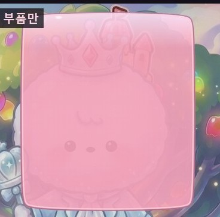<div class="cptop"><b>판</b><span><i class="dot g"></i></span></div><div class="cm"><span class="stag num">소비처 15</span><span class="ord c">코드로 가능</span></div><div class="gale">갈면 <b class="num">15창</b>가 바뀐다<span class="lbl"> · jelly-box 1파일</span></div></div>
<div class="cpcard">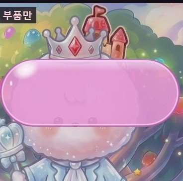<div class="cptop"><b>캡슐</b><span><i class="dot y"></i></span></div><div class="cm"><span class="stag num">소비처 16</span><span class="ord c">코드로 가능</span></div><div class="gale">갈면 <b class="num">16자리</b>가 바뀐다<span class="lbl"> · .wf-cap 토큰 1벌</span></div></div>
<div class="cpcard"><div class="cptop"><b>버튼 틀</b><span><i class="dot g"></i></span></div><div class="cm"><span class="stag num">소비처 74</span><span class="ord c">코드로 가능</span></div><div class="gale">갈면 <b class="num">74자리</b>가 바뀐다<span class="lbl"> · work-btn 틀 1</span></div></div>
<div class="cpcard"><div class="cptop"><b>X</b><span><i class="dot g"></i></span></div><div class="cm"><span class="stag num">소비처 11</span><span class="ord h">기존 자산</span></div><div class="gale">갈면 <b class="num">11자리</b>가 바뀐다<span class="lbl"> · sian3-close 1파일</span></div></div>
<div class="cpcard">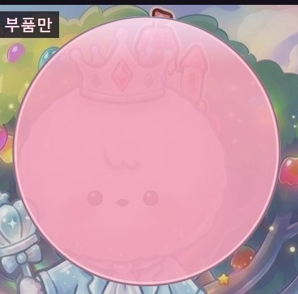<div class="cptop"><b>칩</b><span><i class="dot y"></i></span></div><div class="cm"><span class="stag num">소비처 11</span><span class="ord c">코드로 가능</span></div><div class="gale">갈면 <b class="num">11자리</b>가 바뀐다<span class="lbl"> · .wf-chip 토큰 1벌</span></div></div>
<div class="cpcard">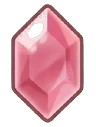<div class="cptop"><b>슬롯</b><span><i class="dot g"></i></span></div><div class="cm"><span class="stag num">소비처 3</span><span class="ord c">코드로 가능</span></div><div class="gale">갈면 <b class="num">3레일</b>가 바뀐다<span class="lbl"> · slot 틀 1벌</span></div></div>
<div class="cpcard"><div class="cptop"><b>게이지</b><span><i class="dot g"></i></span></div><div class="cm"><span class="stag num">소비처 6</span><span class="ord c">코드로 가능</span></div><div class="gale">갈면 <b class="num">6자리</b>가 바뀐다<span class="lbl"> · kit-gauge 1벌</span></div></div>
<div class="cpcard"><div class="cptop"><b>제목 규격</b><span><i class="dot y"></i></span></div><div class="cm"><span class="stag num">소비처 20</span><span class="ord d">발주 완료</span></div><div class="gale">갈면 <b class="num">20자리</b>가 바뀐다<span class="lbl"> · ttl 규격 1</span></div></div>
<div class="cpcard"><div class="cptop"><b>아이콘 규격</b><span><i class="dot r"></i></span></div><div class="cm"><span class="stag num">소비처 22</span><span class="ord n">그림 발주 필요</span></div><div class="gale">갈면 <b class="num">22자리</b>가 바뀐다<span class="lbl"> · ic 규격 1</span></div></div>
</div>
<div class="cprow"><span class="lbl">버튼 틀</span><span class="seg">기준 <b>1</b></span><i>›</i><span class="seg">슬롯 <b>5</b></span><i>›</i><span class="seg">형태 <b>4</b></span><i>›</i><span class="seg">역할 색 <b>8</b></span><i>›</i><span class="seg">그림 버튼 <b>15</b> <em>사용자 8 무접촉 · 슬롯화 7</em></span></div>
<ol class="rule"><li>등록부 <b>S#</b> 로만 접수 — SIAN-REGISTRY 에 없으면 시안이 아니다</li><li><b>부품 매핑</b> → <b>경계 diff</b> — 열린 슬롯만 시안이 확정한다</li><li>판정 <b>코드로 가능 / 그림 발주</b> — 완료는 손이 아니라 done-gate 계산으로만</li></ol>
<p class="gate"><b>done-gate</b> (a)계열=1 · (b)교체점 1 · (c)소비처≥1 · (d)정본↔게임 값 동일 · (e)사용자 자산 면제·무접촉<span class="gnow num"><i class="dot g"></i>있음 5<i class="dot y"></i>부분 6<i class="dot r"></i>없음 7</span></p>
</section>
<section class="tonight" id="z-tonight">
<b class="th">오늘 밤 판정 순서</b><span class="lbl"> · 밤샘 수리분 · 각 줄 = 해당 구역으로 이동</span>
<ol>
<li><a href="#m-plate">1  판 색 4열</a><span class="st">정석(정보판) 값으로 재굽기·푸시 · 사용자 판정 대기</span></li>
<li><a href="#s-hud">2  HUD 3단</a><span class="st">푸시됨 05da1fc — HUD 4부품 프레임 단위 재배선 + 반려 3건(흰광 넘침·클래식 정지버튼·펫 방울 남색) 수정, 배포 확인</span></li>
<li><a href="#m-node">3  스테이지 카드 구성</a><span class="st">수리 완료·푸시 · 사용자 판정 대기(지휘자 구성)</span></li>
<li><a href="#s-charsel">4  캐릭창</a><span class="st">①~⑰ 수리·푸시 완료 · 사용자 판정 대기</span></li>
<li><a href="#m-howto">5  게임 방법 · 클리어</a><span class="st">수리 완료·푸시 · 사용자 판정 대기</span></li>
<li><a href="#ref-btn">6  기준 버튼</a><span class="st">검토 대기</span></li>
</ol></section>
<section class="comp kit" id="z-kit">
<div class="comphead"><span class="zname">킷 시트 — 창고 정본</span><span class="lbl">정본 렌더 ↔ 중복 지도 · 매 파도 갱신</span></div>
<p class="kitdesc">정본 렌더(위) <b>↔</b> 지금 게임 계열 중복 지도(아래). <b class="r">🔴 빈 칸</b> = 발주/코드 목록, <b>중복 칸</b> = 정규화 목록. 매 파도 갱신(WORKFLOW-V2 R7).</p>
<details class="kittab" open>
<summary>정본 킷 v0</summary>
<p class="kitcap">원본 <b>tentwin/ref-v2/KIT-SHEET-v0.png</b> · 생성 2026-09-04 04:32 · 원본 4.10 MB · 임베드 2800×11112 (1배율 q85)</p>
<input type="checkbox" id="kf-k1" class="kf-chk">
<label for="kf-k1" class="kf-lab">전체 보기 (높이 제한 해제)</label>
<div class="kitwrap"></div>
</details>
<details class="kittab">
<summary>중복 지도 v0</summary>
<p class="kitcap">원본 <b>tentwin/ref-v2/KIT-DUPS-v0.png</b> · 생성 2026-09-04 00:33 · 원본 2.16 MB · 임베드 2880×9542 (1배율 q85)</p>
<input type="checkbox" id="kf-k2" class="kf-chk">
<label for="kf-k2" class="kf-lab">전체 보기 (높이 제한 해제)</label>
<div class="kitwrap">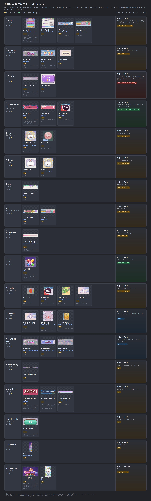</div>
</details>
</section>
<details class="zone" id="z-screens" open>
<summary><div class="zhead"><span class="zname">화면 8</span><span class="stamp ">검토 대기</span></div><p class="zfocus">초점 · 화면마다 시안 · 부품 · 지금 세 칸이 같은 자리에 서 있는가</p><p class="zskip">이번엔 보지 말 것 · 모달 안쪽 글 · 버튼 낱개 (아래 구역에서 본다)</p></summary>
<div class="zbody"><section class="strip" id="s-menu" data-tab="" style="--ph:300px">
<div class="striphead"><span class="sname">메뉴</span><span class="stamp ">검토 대기</span><span class="chg">rev 대비: 변경 없음</span></div>
<p class="focus">초점 · S10의 버튼 틀 실측 소스·타이틀 로고·리본</p>
<p class="skip">이번엔 보지 말 것 · 없음</p>
<div class="tabs" role="group" aria-label="칸 고르기"><button class="tab" type="button" data-p="1" aria-pressed="false">① 시안</button><button class="tab" type="button" data-p="2" aria-pressed="false">② 부품</button><button class="tab" type="button" data-p="3" aria-pressed="false">③ 지금</button></div>
<div class="panes">
<div class="pane" data-p="1"><span class="lbl">① 시안</span>
<div class="box">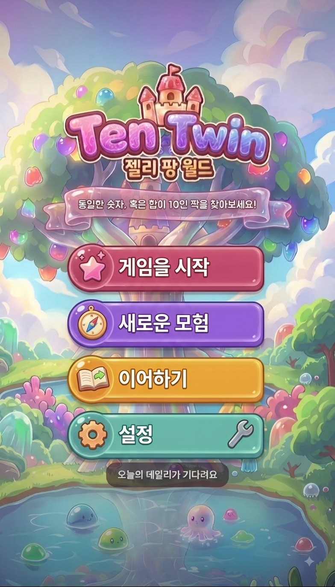</div>
<span class="lbl" style="margin-top:4px">S10 · 메인 메뉴 + 버튼 기준 원본</span>
<span class="lbl">메인화면, 버튼.png</span>
</div>
<div class="pane" data-p="2"><span class="lbl">② 구성 부품</span><div class="grid">
<div class="cellcard"><div class="cn">젤리 버튼 기준</div><div class="cm"><span class="stag">S1</span><span><i class="dot y"></i>검토중</span></div><div class="cm"><span></span><span class="ord c">코드로 가능</span></div><details class="lay"><summary>구성 보기</summary><div class="lrow"><div class="lc">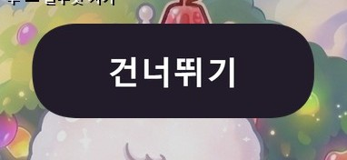<span>L0 실루엣</span></div><div class="lc"><span>L1 색</span></div><div class="lc"><span>L1.5 비침</span></div><div class="lc"><span>L2 유백·림·광</span></div><div class="lc"><span>L3 겉선</span></div></div></details></div>
<div class="cellcard"><div class="cn">리본 헤더</div><div class="cm"><span class="stag">출처 없음</span><span><i class="dot r"></i>출처 시안 없음</span></div><div class="cm"><span></span><span class="ord d">발주 완료</span></div></div>
<div class="cellcard"><div class="cn">제목 레터링</div><div class="cm"><span class="stag">S2</span><span><i class="dot y"></i>검토중</span></div><div class="cm"><span></span><span class="ord c">코드로 가능</span></div></div>
</div></div>
<div class="pane" data-p="3"><span class="lbl">③ 지금 (실화면)</span>
<div class="box">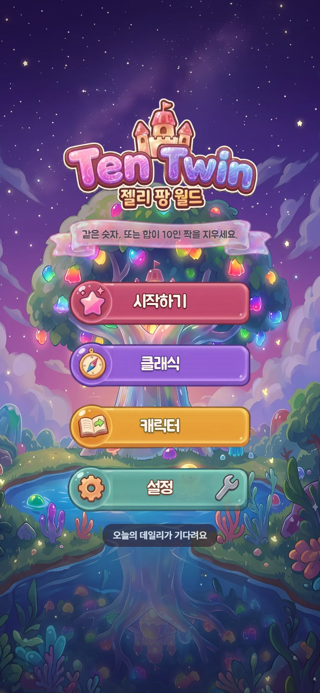</div>
<span class="lbl" style="margin-top:4px">now-01 · main-menu</span>
</div>
</div>
</section>
<section class="strip" id="s-play" data-tab="" style="--ph:300px">
<div class="striphead"><span class="sname">플레이 모달</span><span class="stamp ">검토 대기</span><span class="chg">rev 대비: 플레이 모달 4줄 원문 복원 (반쪽 원복 사고 수리)</span></div>
<p class="focus">초점 · S4의 그림 버튼 4줄·배지·배치</p>
<p class="skip">이번엔 보지 말 것 · 아케이드 하위 시트 아이콘 없음</p>
<ul class="res"><li>플레이 모달 2줄 조사</li><li>플레이 모달 행 피치</li><li>행 피치</li></ul>
<div class="tabs" role="group" aria-label="칸 고르기"><button class="tab" type="button" data-p="1" aria-pressed="false">① 시안</button><button class="tab" type="button" data-p="2" aria-pressed="false">② 부품</button><button class="tab" type="button" data-p="3" aria-pressed="false">③ 지금</button></div>
<div class="panes">
<div class="pane" data-p="1"><span class="lbl">① 시안</span>
<div class="box">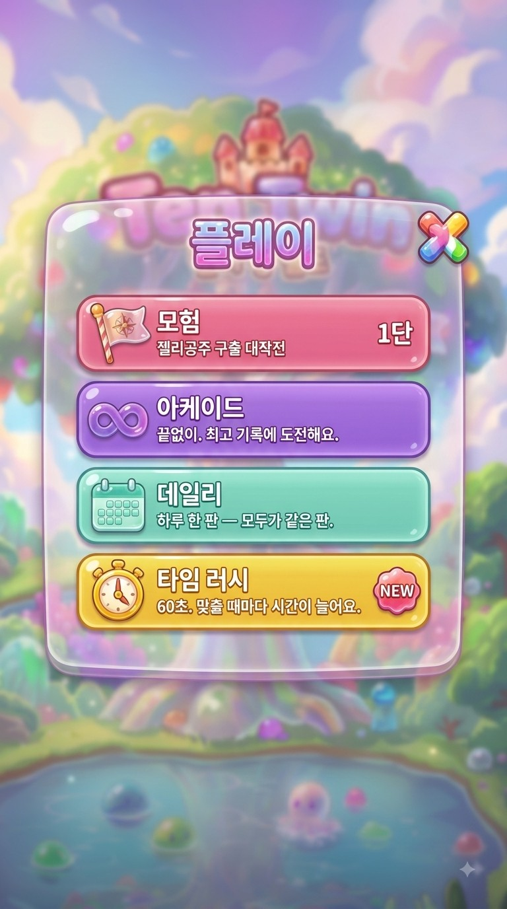</div>
<span class="lbl" style="margin-top:4px">S4 · 플레이 모달 완성본(원본)</span>
<span class="lbl">모달창_스토리게임 모드.png</span>
</div>
<div class="pane" data-p="2"><span class="lbl">② 구성 부품</span><div class="grid">
<div class="cellcard"><div class="cn">젤리판 · 모달</div><div class="cm"><span class="stag">S1</span><span><i class="dot g"></i>기준 확정</span></div><div class="cm"><span></span><span class="ord c">코드로 가능</span></div><details class="lay"><summary>구성 보기</summary><div class="lrow"><div class="lc">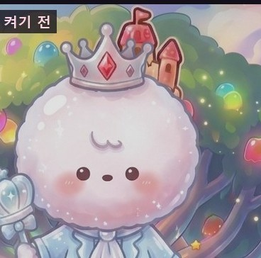<span>L0 실루엣</span></div><div class="lc">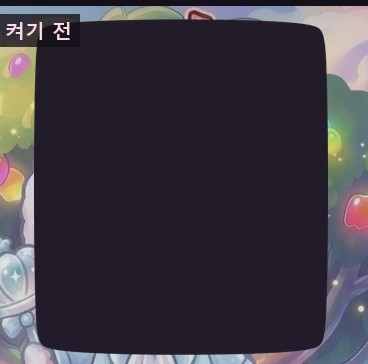<span>L1 색</span></div><div class="lc">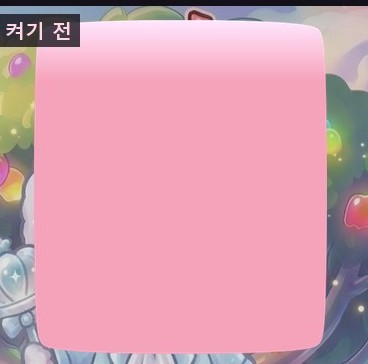<span>L1.5 비침</span></div><div class="lc">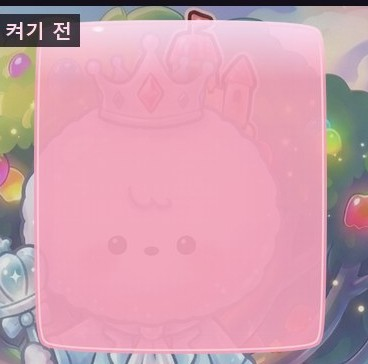<span>L2 유백·림·광</span></div><div class="lc"><span>L3 겉선</span></div><div class="lc"><span>L4 값 자리</span></div></div></details></div>
<div class="cellcard">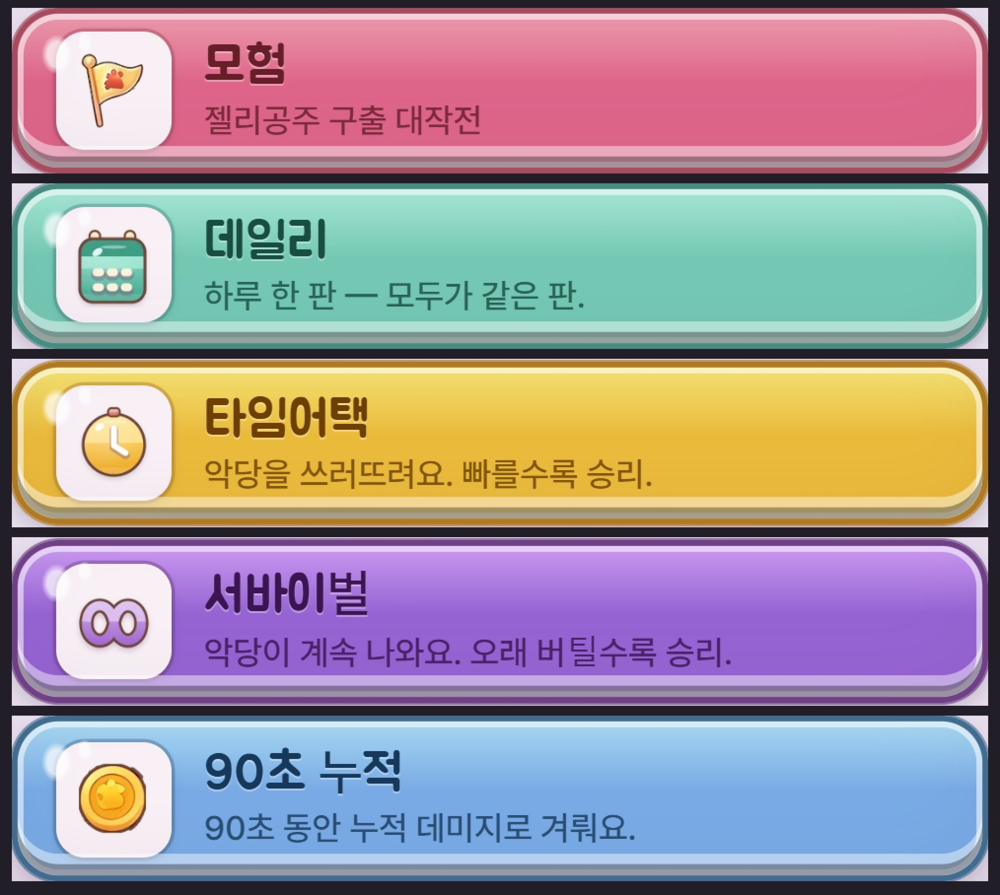<div class="cn">모드 행 명패</div><div class="cm"><span class="stag">S4</span><span><i class="dot r"></i>대장 미등재</span></div><div class="cm"><span></span><span class="ord c">코드로 가능</span></div></div>
<div class="cellcard"><div class="cn">닫기 X</div><div class="cm"><span class="stag">S1</span><span><i class="dot g"></i>기준 확정</span></div><div class="cm"><span></span><span class="ord d">발주 완료</span></div></div>
<div class="cellcard"><div class="cn">제목 레터링</div><div class="cm"><span class="stag">S2</span><span><i class="dot y"></i>검토중</span></div><div class="cm"><span></span><span class="ord c">코드로 가능</span></div></div>
</div></div>
<div class="pane" data-p="3"><span class="lbl">③ 지금 (실화면)</span>
<div class="box">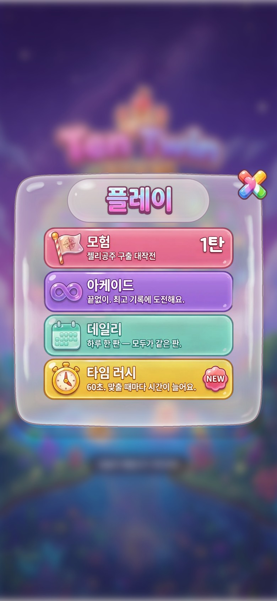</div>
<span class="lbl" style="margin-top:4px">now-02 · play-modal</span>
</div>
</div>
</section>
<section class="strip" id="s-howto" data-tab="" style="--ph:300px">
<div class="striphead"><span class="sname">게임 방법</span><span class="stamp ">검토 대기</span><span class="chg">rev 대비: 제목 캡슐 = HUD 캡슐 부품 · 버튼 재질</span></div>
<p class="focus">초점 · S1의 모달 판·제목 캡슐·버튼</p>
<p class="skip">이번엔 보지 말 것 · 판 색·투명은 S9 재실측 중</p>
<ul class="res"><li>튜토리얼 타일 퍼짐</li></ul>
<div class="tabs" role="group" aria-label="칸 고르기"><button class="tab" type="button" data-p="1" aria-pressed="false">① 시안</button><button class="tab" type="button" data-p="2" aria-pressed="false">② 부품</button><button class="tab" type="button" data-p="3" aria-pressed="false">③ 지금</button></div>
<div class="panes">
<div class="pane" data-p="1"><span class="lbl">① 시안</span>
<div class="box">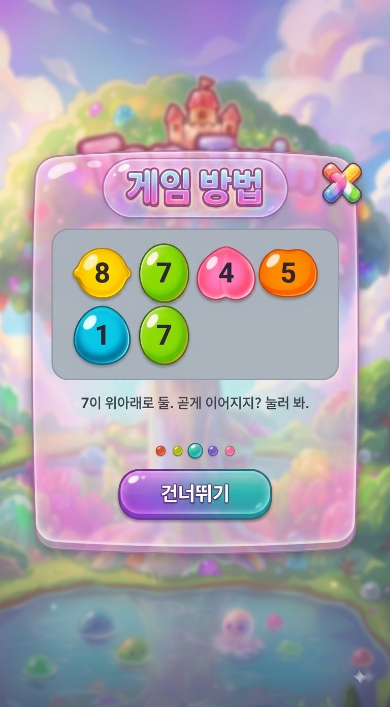</div>
<span class="lbl" style="margin-top:4px">S1 · 게임 방법 조립본</span>
<span class="lbl">90127e38-image.png</span>
<div class="subs">
<div class="sub">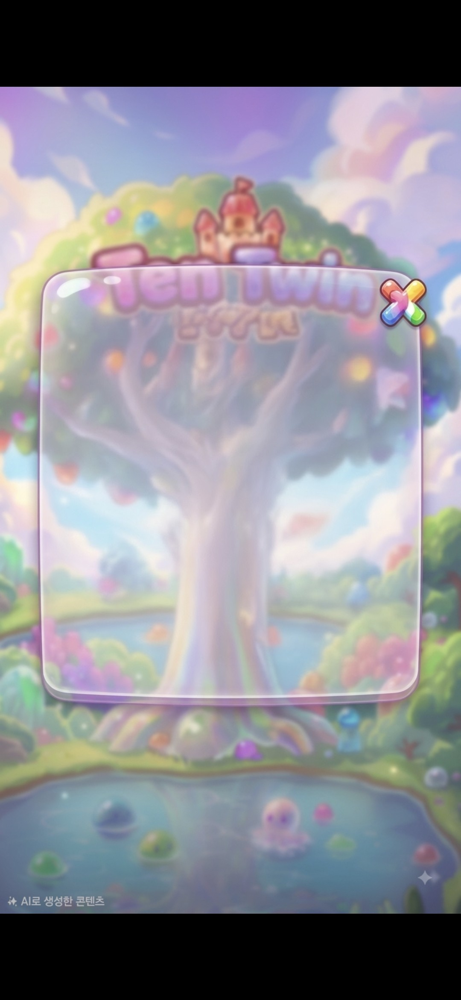<span class="lbl">S9</span></div>
<div class="sub">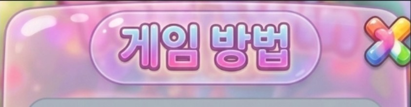<span class="lbl">S2</span></div>
<div class="sub"><span class="lbl">S3</span></div>
</div>
</div>
<div class="pane" data-p="2"><span class="lbl">② 구성 부품</span><div class="grid">
<div class="cellcard"><div class="cn">젤리판 · 모달</div><div class="cm"><span class="stag">S1</span><span><i class="dot g"></i>기준 확정</span></div><div class="cm"><span></span><span class="ord c">코드로 가능</span></div><details class="lay"><summary>구성 보기</summary><div class="lrow"><div class="lc"><span>L0 실루엣</span></div><div class="lc"><span>L1 색</span></div><div class="lc"><span>L1.5 비침</span></div><div class="lc"><span>L2 유백·림·광</span></div><div class="lc"><span>L3 겉선</span></div><div class="lc"><span>L4 값 자리</span></div></div></details></div>
<div class="cellcard"><div class="cn">제목 레터링</div><div class="cm"><span class="stag">S2</span><span><i class="dot y"></i>검토중</span></div><div class="cm"><span></span><span class="ord c">코드로 가능</span></div></div>
<div class="cellcard"><div class="cn">젤리 버튼 기준</div><div class="cm"><span class="stag">S1</span><span><i class="dot y"></i>검토중</span></div><div class="cm"><span></span><span class="ord c">코드로 가능</span></div><details class="lay"><summary>구성 보기</summary><div class="lrow"><div class="lc"><span>L0 실루엣</span></div><div class="lc"><span>L1 색</span></div><div class="lc"><span>L1.5 비침</span></div><div class="lc"><span>L2 유백·림·광</span></div><div class="lc"><span>L3 겉선</span></div></div></details></div>
<div class="cellcard"><div class="cn">닫기 X</div><div class="cm"><span class="stag">S1</span><span><i class="dot g"></i>기준 확정</span></div><div class="cm"><span></span><span class="ord d">발주 완료</span></div></div>
</div></div>
<div class="pane" data-p="3"><span class="lbl">③ 지금 (실화면)</span>
<div class="box">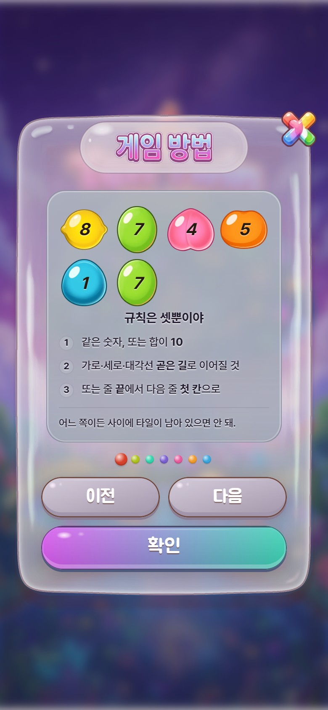</div>
<span class="lbl" style="margin-top:4px">now-03 · howto-modal</span>
<div class="subs">
<div class="sub" style="width:calc(50% - 3px)"><span class="lbl">400% · howto-title</span></div>
</div>
</div>
</div>
</section>
<section class="strip" id="s-settings" data-tab="" style="--ph:300px">
<div class="striphead"><span class="sname">설정</span><span class="stamp ">검토 대기</span><span class="chg">rev 대비: 보조 버튼 재질 통일 진행 중</span></div>
<p class="focus">초점 · 시안 없음 — 배포본/우리 정본과 나란히</p>
<p class="skip">이번엔 보지 말 것 · 없음</p>
<div class="tabs" role="group" aria-label="칸 고르기"><button class="tab" type="button" data-p="1" aria-pressed="false">① 시안</button><button class="tab" type="button" data-p="2" aria-pressed="false">② 부품</button><button class="tab" type="button" data-p="3" aria-pressed="false">③ 지금</button></div>
<div class="panes">
<div class="pane" data-p="1"><span class="lbl">① 시안</span>
<div class="box"><div class="none">시안 없음<br>— 배포본 / 우리 정본</div></div>
</div>
<div class="pane" data-p="2"><span class="lbl">② 구성 부품</span><div class="grid">
<div class="cellcard"><div class="cn">젤리판 · 모달</div><div class="cm"><span class="stag">S1</span><span><i class="dot g"></i>기준 확정</span></div><div class="cm"><span></span><span class="ord c">코드로 가능</span></div><details class="lay"><summary>구성 보기</summary><div class="lrow"><div class="lc"><span>L0 실루엣</span></div><div class="lc"><span>L1 색</span></div><div class="lc"><span>L1.5 비침</span></div><div class="lc"><span>L2 유백·림·광</span></div><div class="lc"><span>L3 겉선</span></div><div class="lc"><span>L4 값 자리</span></div></div></details></div>
<div class="cellcard"><div class="cn">제목 레터링</div><div class="cm"><span class="stag">S2</span><span><i class="dot y"></i>검토중</span></div><div class="cm"><span></span><span class="ord c">코드로 가능</span></div></div>
<div class="cellcard">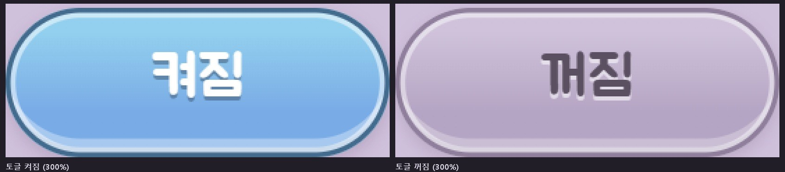<div class="cn">설정 토글</div><div class="cm"><span class="stag">출처 없음</span><span><i class="dot r"></i>출처 시안 없음</span></div><div class="cm"><span></span><span class="ord c">코드로 가능</span></div></div>
<div class="cellcard"><div class="cn">닫기 X</div><div class="cm"><span class="stag">S1</span><span><i class="dot g"></i>기준 확정</span></div><div class="cm"><span></span><span class="ord d">발주 완료</span></div></div>
</div></div>
<div class="pane" data-p="3"><span class="lbl">③ 지금 (실화면)</span>
<div class="box">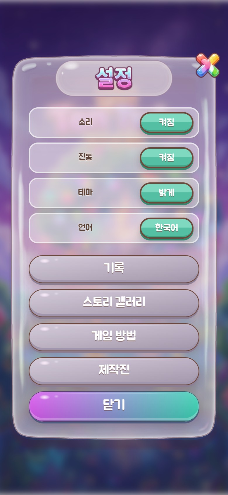</div>
<span class="lbl" style="margin-top:4px">now-04 · settings-modal</span>
<div class="subs">
<div class="sub" style="width:calc(50% - 3px)">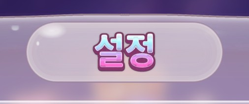<span class="lbl">400% · set-title</span></div>
<div class="sub" style="width:calc(50% - 3px)">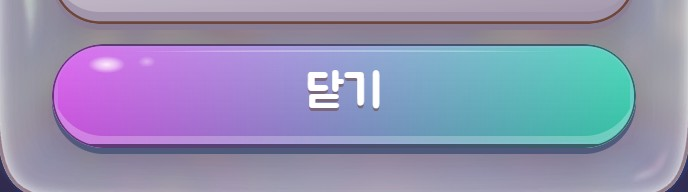<span class="lbl">400% · set-close</span></div>
</div>
</div>
</div>
</section>
<section class="strip" id="s-charsel" data-tab="" style="--ph:300px">
<div class="striphead"><span class="sname">캐릭터 선택창</span><span class="stamp ">①~⑰ 수리·푸시 완료 · 사용자 판정 대기</span><span class="chg">rev 대비: 실기기 반려 7건 접수 — 수리 에이전트 배정 (커밋 뒤 체크리스트 ☑)</span></div>
<p class="focus">초점 · 실기기 반려 17건(⑨ 클래식·⑩ 내 기록·⑪ 스테이지 모달) — ①이름↔초상 간격0 ②초상 크롭 불일치 ③이름 들쭉 ④캡슐 글자 찌부 ⑤정보판 젤리 질감 없음 ⑥탭 내용 전환 안 됨 ⑦전신 다리 잘림</p>
<p class="skip">이번엔 보지 말 것 · 레일·게이지·정보 수치는 이번 반려 범위 아님</p>
<ul class="res"><li>슬롯 아이콘 배선</li><li>캐릭터창 닫기 X 지름</li><li>전략가 배지 가로</li></ul>
<div class="tabs" role="group" aria-label="칸 고르기"><button class="tab" type="button" data-p="1" aria-pressed="false">① 시안</button><button class="tab" type="button" data-p="2" aria-pressed="false">② 부품</button><button class="tab" type="button" data-p="3" aria-pressed="false">③ 지금</button></div>
<div class="panes">
<div class="pane" data-p="1"><span class="lbl">① 시안</span>
<div class="box">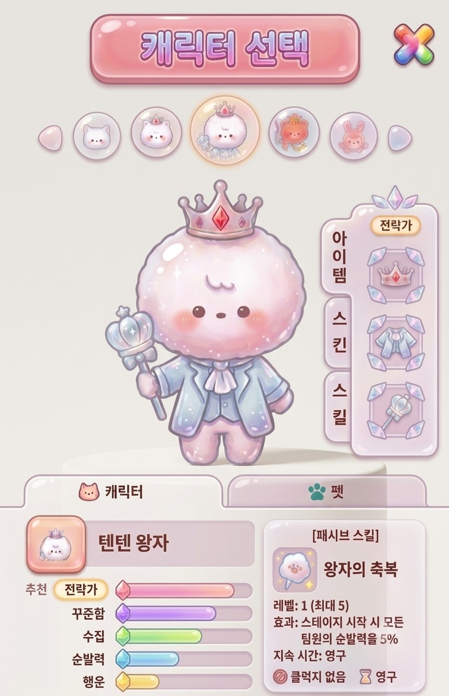</div>
<span class="lbl" style="margin-top:4px">S5 · 캐릭터 선택창</span>
<span class="lbl">fffae90b-image.png</span>
</div>
<div class="pane" data-p="2"><span class="lbl">② 구성 부품</span><div class="grid">
<div class="cellcard">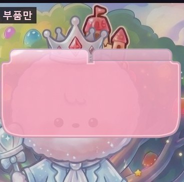<div class="cn">젤리판 · 캐릭터판</div><div class="cm"><span class="stag">S5</span><span><i class="dot g"></i>기준 확정</span></div><div class="cm"><span></span><span class="ord c">코드로 가능</span></div><details class="lay"><summary>구성 보기</summary><div class="lrow"><div class="lc"><span>L0 실루엣</span></div><div class="lc">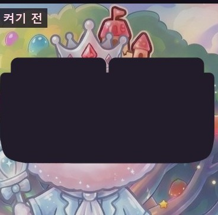<span>L1 색</span></div><div class="lc">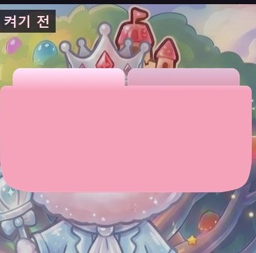<span>L1.5 비침</span></div><div class="lc"><span>L2 유백·림·광</span></div><div class="lc"><span>L3 겉선</span></div><div class="lc"><span>L4 값 자리</span></div></div></details></div>
<div class="cellcard"><div class="cn">캐릭터/펫 탭</div><div class="cm"><span class="stag">S5</span><span><i class="dot y"></i>검토중</span></div><div class="cm"><span></span><span class="ord c">코드로 가능</span></div></div>
<div class="cellcard"><div class="cn">제목 레터링</div><div class="cm"><span class="stag">S2</span><span><i class="dot y"></i>검토중</span></div><div class="cm"><span></span><span class="ord c">코드로 가능</span></div></div>
<div class="cellcard"><div class="cn">닫기 X</div><div class="cm"><span class="stag">S1</span><span><i class="dot g"></i>기준 확정</span></div><div class="cm"><span></span><span class="ord d">발주 완료</span></div></div>
</div></div>
<div class="pane" data-p="3"><span class="lbl">③ 지금 (실화면)</span>
<div class="box"></div>
<span class="lbl" style="margin-top:4px">now-05 · charselect-char-tab</span>
</div>
</div>
<div class="reject">
<div class="rejhd"><b>지금 화면 (반려용) · 실기기</b><span class="lbl">사용자 스크린샷 — 시안 아님</span></div>
<div class="rejshots">
<figure><figcaption>실기기 반려 · 푸딩</figcaption></figure>
<figure><figcaption>실기기 반려 · 소다</figcaption></figure>
<figure class="ref"><figcaption>기준 · 우리 렌더 9/1</figcaption></figure>
</div>
<div class="sbsblk">
<div class="sbshd"><b>수정 나란히 · [반려 | 수정 후 | 기준]</b><span class="lbl">1배율 · 폭 1100</span></div>
<div class="sbsitem"><p class="sbscap"><b>캐릭창 8건 [반려 | 수정 후 | 기준]</b> · scratchpad/charsel-0904/SBS-charsel-8.png · 1980×2202</p><input type="checkbox" id="sbs-1" class="sbs-chk"><label for="sbs-1" class="sbs-lab">전체 보기 (높이 제한 해제)</label><div class="sbswrap"></div></div>
<div class="sbsitem"><p class="sbscap"><b>캐릭 카드/칩 [반려 | 수정 후 | 기준]</b> · scratchpad/cscard-0904/SBS-cscard.png · 1945×1250</p><input type="checkbox" id="sbs-2" class="sbs-chk"><label for="sbs-2" class="sbs-lab">전체 보기 (높이 제한 해제)</label><div class="sbswrap"></div></div>
<div class="sbsitem"><p class="sbscap"><b>중앙 픽 캐러셀 [반려 | 수정 후 | 기준]</b> · scratchpad/carousel-0904/SBS-carousel.png · 920×711</p><input type="checkbox" id="sbs-3" class="sbs-chk"><label for="sbs-3" class="sbs-lab">전체 보기 (높이 제한 해제)</label><div class="sbswrap"></div></div>
</div>
<div class="chkhd"><b>건별 체크리스트</b><span class="lbl">수리 커밋 뒤 지휘자가 ☑ 로 바꾼다</span></div>
<ul class="chk">
<li class="done">☑ ① (정정) 시안 S5대로 초상 칩·이름 알약은 붙임 유지, 칩을 입체 젤리(볼록·광택·접지)로 — 간격 벌리기 취소</li>
<li class="done">☑ ② 초상 칩 크롭 불일치 (푸딩 머리만 · 소다 머리 잘림) — 칩 크롭 규격 통일</li>
<li class="done">☑ ③ 이름 글자 들쭉날쭉 — 이름 알약 글자 기준선 · 크기 통일</li>
<li class="done">☑ ④ 「캐릭터 선택」 캡슐 글자 찌부 — 전 모달 캡슐 글자 규격을 플레이 모달 기준으로 통일(비율 보존)</li>
<li class="done">☑ ⑤ 정보판 · 아이템/스킨/필살기 판 젤리 질감 · 투명 없음 (기준 = 9/1 우리 렌더)</li>
<li class="done">☑ ⑥ 아이템/스킨/필살기 탭 선택만 되고 내용 전환 안 됨</li>
<li class="done">☑ ⑦ 전신 캐릭터 다리가 하단 정보판에 가려 잘림 — 5캐릭 전신이 무대 영역 안에 들어오게 등장 위치 · 크기 조정</li>
<li class="done">☑ ⑧ 초상 방울 줄 양끝 젤리 화살표(◁▷) 구현 + 줄을 캡슐 아래 가로 중앙 정렬(시안 S5)</li>
<li class="done">☑ ⑨ (클래식 모달) 아케이드/타임러시/데일리 3행이 민무늬 껍데기 — 플레이 모달 행 부품(그림 버튼+아이콘+제목+설명) 재사용으로 완성</li>
<li class="done">☑ ⑩ (내 기록 모달) 내용이 판 아래로 넘쳐 흐름·행 색감 — 판 안 스크롤/높이 규칙, TOP5·아케이드 대전 행 = 설정 모달 행 부품, 모드 선택 = 알약 변주 역할색</li>
<li class="done">☑ ⑪ (스테이지 모달 1탄) 쓸데없는 줄 정리·구성 재편, 시작 버튼 = 기준 버튼(S10 틀), 캡슐 제목 레터링, 별 조건·하트 비용</li>
<li class="done">☑ ⑫ 「스테이지를 나왔어요. 하트 -1.」 토스트가 캐릭창까지 잔류(버그) — 타이머/전환 정리</li>
<li class="done">☑ ⑬ [패시브 스킬] 카드 판 불투명 → 시안 S5대로 연보라 반투명 젤리</li>
<li class="done">☑ ⑭ 상단 방울·하단 칩 얼굴 크기 들쭉날쭉 → 자산 얼굴 bbox 메타로 비율 통일</li>
<li class="done">☑ ⑮ 양끝 화살표 모양·색이 시안 S5와 다름 → S5 실측 형태(바깥향 젤리 물방울·반투명 연분홍)</li>
<li class="done">☑ ⑯ 방울 선택과 무대 전신 캐릭터 불일치(버그) → 단일 상태값</li>
<li class="done">☑ ⑰ 선택 UI = 중앙 픽 캐러셀(사용자 확정): 금테 중앙 고정, 방울 줄이 이동, 중앙=무대=이름</li>
<li class="done">☑ (추가) 잠긴 캐릭 방울 실루엣 복구 · 캐릭창 판·알약 색 S5 실측</li>
</ul>
</div>
</section>
<section class="strip" id="s-hud" data-tab="" style="--ph:300px">
<div class="striphead"><span class="sname">전투 HUD</span><span class="stamp ">푸시됨 05da1fc — HUD 4부품 프레임 단위 재배선 + 반려 3건(흰광 넘침·클래식 정지버튼·펫 방울 남색) 수정, 배포 확인</span><span class="chg">rev 대비: rev14: 프레임 1파일 1Frame 재배선(top-cap 폐기, HP 4층) · 클래식 옛 젤리 덮개 은퇴 · 정지 버튼 공용 · 펫 자산 남색 방울 알파 제거</span></div>
<p class="focus">초점 · 1 위 판·2 아래 판(시안 실루엣, 재질 B 시안 실측, L+5%) · 3 캡슐·4 방울 = 캐릭창 부품(HUD sky 변주) · 모험·클래식 같은 베이스. 후속: 클래식 캐릭 큰 방울 완전 부품화.</p>
<p class="skip">이번엔 보지 말 것 · 뼈/날개·이름 탭·펫 방울 복원 중</p>
<ul class="res"><li>전투 HUD 실검증</li></ul>
<div class="tabs" role="group" aria-label="칸 고르기"><button class="tab" type="button" data-p="1" aria-pressed="false">① 시안</button><button class="tab" type="button" data-p="2" aria-pressed="false">② 부품</button><button class="tab" type="button" data-p="3" aria-pressed="false">③ 지금</button></div>
<div class="panes">
<div class="pane" data-p="1"><span class="lbl">① 시안</span>
<div class="box"></div>
<span class="lbl" style="margin-top:4px">S6 · 전투 인게임 원본</span>
<span class="lbl">인게임 화면.png</span>
<div class="subs">
<div class="sub"><span class="lbl">S7</span></div>
<div class="sub"><span class="lbl">S8</span></div>
</div>
</div>
<div class="pane" data-p="2"><span class="lbl">② 구성 부품</span><div class="grid">
<div class="cellcard"><div class="cn">젤리판 · HUD 넓은판</div><div class="cm"><span class="stag">S7</span><span><i class="dot g"></i>기준 확정</span></div><div class="cm"><span></span><span class="ord c">코드로 가능</span></div><details class="lay"><summary>구성 보기</summary><div class="lrow"><div class="lc"><span>L0 실루엣</span></div><div class="lc"><span>L1 색</span></div><div class="lc"><span>L1.5 비침</span></div><div class="lc"><span>L2 유백·림·광</span></div><div class="lc"><span>L3 겉선</span></div><div class="lc"><span>L4 값 자리</span></div></div></details></div>
<div class="cellcard"><div class="cn">젤리판 · 날개판(슬롯 틀)</div><div class="cm"><span class="stag">S7</span><span><i class="dot g"></i>기준 확정</span></div><div class="cm"><span></span><span class="ord c">코드로 가능</span></div><details class="lay"><summary>구성 보기</summary><div class="lrow"><div class="lc"><span>L0 실루엣</span></div><div class="lc"><span>L1 색</span></div><div class="lc"><span>L1.5 비침</span></div><div class="lc"><span>L2 유백·림·광</span></div><div class="lc"><span>L3 겉선</span></div><div class="lc"><span>L4 값 자리</span></div></div></details></div>
<div class="cellcard"><div class="cn">젤리판 · 캡슐</div><div class="cm"><span class="stag">S7</span><span><i class="dot g"></i>기준 확정</span></div><div class="cm"><span></span><span class="ord c">코드로 가능</span></div><details class="lay"><summary>구성 보기</summary><div class="lrow"><div class="lc"><span>L0 실루엣</span></div><div class="lc"><span>L1 색</span></div><div class="lc"><span>L1.5 비침</span></div><div class="lc"><span>L2 유백·림·광</span></div><div class="lc"><span>L3 겉선</span></div><div class="lc"><span>L4 값 자리</span></div></div></details></div>
<div class="cellcard"><div class="cn">젤리판 · 원형 칩</div><div class="cm"><span class="stag">S7</span><span><i class="dot g"></i>기준 확정</span></div><div class="cm"><span></span><span class="ord c">코드로 가능</span></div><details class="lay"><summary>구성 보기</summary><div class="lrow"><div class="lc"><span>L0 실루엣</span></div><div class="lc"><span>L1 색</span></div><div class="lc"><span>L1.5 비침</span></div><div class="lc"><span>L2 유백·림·광</span></div><div class="lc"><span>L3 겉선</span></div><div class="lc"><span>L4 값 자리</span></div></div></details></div>
</div></div>
<div class="pane" data-p="3"><span class="lbl">③ 지금 (실화면)</span>
<div class="box"></div>
<span class="lbl" style="margin-top:4px">now-06 · adventure-ingame</span>
<div class="subs">
<div class="sub" style="width:calc(50% - 3px)"><span class="lbl">400% · hud-timer</span></div>
</div>
</div>
</div>
<div class="reject">
<div class="sbsblk">
<div class="sbshd"><b>수정 나란히 · [반려 | 수정 후 | 기준]</b><span class="lbl">1배율 · 폭 1100</span></div>
<div class="sbsitem"><p class="sbscap"><b>HUD 3단 [반려 | 수정 후 | 기준]</b> · scratchpad/hud-0904/SBS-hud.png · 1100×1378</p><input type="checkbox" id="sbs-4" class="sbs-chk"><label for="sbs-4" class="sbs-lab">전체 보기 (높이 제한 해제)</label><div class="sbswrap"></div></div>
<div class="sbsitem"><p class="sbscap"><b>HUD 대조표 (요소별 있음/다름/없음)</b> · scratchpad/hud-0904/HUD-DIFF.png · 1100×1392</p><input type="checkbox" id="sbs-5" class="sbs-chk"><label for="sbs-5" class="sbs-lab">전체 보기 (높이 제한 해제)</label><div class="sbswrap"></div></div>
</div>
<div class="chkhd"><b>건별 체크리스트</b><span class="lbl">수리 커밋 뒤 지휘자가 ☑ 로 바꾼다</span></div>
<ul class="chk">
<li class="done">☑ HUD-A 시안 S6 구성요소 대조표(요소별 있음/다름/없음)</li>
<li class="done">☑ HUD-B 체력바 자산(뼈·날개+젤리 게이지) 재현 또는 발주 — 장식 유지·몸통 S6 hex 코드(부분)</li>
<li class="done">☑ HUD-C 캐릭터(초상/전신) 시안 위치 복귀</li>
<li class="done">☑ HUD-D 시간 캡슐 — 바 겉선 지워 박힘</li>
<li class="done">☑ HUD-E 판·캡슐 탁함 복구(정석 값, 4dc3d893 대비 관문)</li>
<li class="done">☑ HUD-F 캡슐 홈 — 바 겉선이 캡슐을 따라 도는 시안 형태</li>
<li class="">□ HUD-G 클래식 캐릭 큰 방울(#hero-slot .hs-ring) wf-chip 완전 부품화 — 후속</li>
<li class="done">☑ HUD-H 부품 위치 = 시안 좌표(캡슐 홈 안착·전 부품·모험/클래식), 50% 오버레이 Δ≤1%W</li>
<li class="done">☑ HUD-I 클래식 내용물(미션·게이지·점수)을 아래 판 안 S6b 좌표에, 캐릭 방울 배치</li>
<li class="done">☑ HUD-J 위 판+캡슐 껍데기 한 장 자산(시안 접합 그대로), 타이머 글리프만 — 접합부 300% 관문</li>
<li class="done">☑ HUD-K cap2 + 판 α.55·L+5% 게임 배선·푸시(사용자 06:30 승인)</li>
<li class="">□ HUD-L 체력바 완성형 2차 시트 전달(S6 실측) — 사용자 판정 대기</li>
</ul>
</div>
</section>
<section class="strip" id="s-classic" data-tab="" style="--ph:300px">
<div class="striphead"><span class="sname">클래식</span><span class="stamp ">검토 대기</span><span class="chg">rev 대비: 변경 없음</span></div>
<p class="focus">초점 · S6b의 타이머·체력바·방울</p>
<p class="skip">이번엔 보지 말 것 · 없음</p>
<div class="tabs" role="group" aria-label="칸 고르기"><button class="tab" type="button" data-p="1" aria-pressed="false">① 시안</button><button class="tab" type="button" data-p="2" aria-pressed="false">② 부품</button><button class="tab" type="button" data-p="3" aria-pressed="false">③ 지금</button></div>
<div class="panes">
<div class="pane" data-p="1"><span class="lbl">① 시안</span>
<div class="box"></div>
<span class="lbl" style="margin-top:4px">S6b · 클래식 HUD 변주</span>
<span class="lbl">4c1274ac-image.png</span>
</div>
<div class="pane" data-p="2"><span class="lbl">② 구성 부품</span><div class="grid">
<div class="cellcard"><div class="cn">젤리판 · HUD 넓은판</div><div class="cm"><span class="stag">S7</span><span><i class="dot g"></i>기준 확정</span></div><div class="cm"><span></span><span class="ord c">코드로 가능</span></div><details class="lay"><summary>구성 보기</summary><div class="lrow"><div class="lc"><span>L0 실루엣</span></div><div class="lc"><span>L1 색</span></div><div class="lc"><span>L1.5 비침</span></div><div class="lc"><span>L2 유백·림·광</span></div><div class="lc"><span>L3 겉선</span></div><div class="lc"><span>L4 값 자리</span></div></div></details></div>
<div class="cellcard"><div class="cn">젤리판 · 캡슐</div><div class="cm"><span class="stag">S7</span><span><i class="dot g"></i>기준 확정</span></div><div class="cm"><span></span><span class="ord c">코드로 가능</span></div><details class="lay"><summary>구성 보기</summary><div class="lrow"><div class="lc"><span>L0 실루엣</span></div><div class="lc"><span>L1 색</span></div><div class="lc"><span>L1.5 비침</span></div><div class="lc"><span>L2 유백·림·광</span></div><div class="lc"><span>L3 겉선</span></div><div class="lc"><span>L4 값 자리</span></div></div></details></div>
<div class="cellcard"><div class="cn">젤리판 · 원형 칩</div><div class="cm"><span class="stag">S7</span><span><i class="dot g"></i>기준 확정</span></div><div class="cm"><span></span><span class="ord c">코드로 가능</span></div><details class="lay"><summary>구성 보기</summary><div class="lrow"><div class="lc"><span>L0 실루엣</span></div><div class="lc"><span>L1 색</span></div><div class="lc"><span>L1.5 비침</span></div><div class="lc"><span>L2 유백·림·광</span></div><div class="lc"><span>L3 겉선</span></div><div class="lc"><span>L4 값 자리</span></div></div></details></div>
</div></div>
<div class="pane" data-p="3"><span class="lbl">③ 지금 (실화면)</span>
<div class="box"></div>
<span class="lbl" style="margin-top:4px">now-07 · classic-ingame</span>
<div class="subs">
<div class="sub" style="width:calc(50% - 3px)"><span class="lbl">400% · classic-cap</span></div>
</div>
</div>
</div>
</section>
<section class="strip" id="s-pcmap" data-tab="" style="--ph:300px">
<div class="striphead"><span class="sname">PC 지도</span><span class="stamp ">검토 대기</span><span class="chg">rev 대비: 변경 없음</span></div>
<p class="focus">초점 · 시안 없음 — 배포본/우리 정본과 나란히</p>
<p class="skip">이번엔 보지 말 것 · 없음</p>
<ul class="res"><li>데스크톱 레이아웃</li></ul>
<div class="tabs" role="group" aria-label="칸 고르기"><button class="tab" type="button" data-p="1" aria-pressed="false">① 시안</button><button class="tab" type="button" data-p="2" aria-pressed="false">② 부품</button><button class="tab" type="button" data-p="3" aria-pressed="false">③ 지금</button></div>
<div class="panes">
<div class="pane" data-p="1"><span class="lbl">① 시안</span>
<div class="box"><div class="none">시안 없음<br>— 배포본 / 우리 정본</div></div>
</div>
<div class="pane" data-p="2"><span class="lbl">② 구성 부품</span><div class="grid">
<div class="cellcard"><div class="cn">젤리판 · 모달</div><div class="cm"><span class="stag">S1</span><span><i class="dot g"></i>기준 확정</span></div><div class="cm"><span></span><span class="ord c">코드로 가능</span></div><details class="lay"><summary>구성 보기</summary><div class="lrow"><div class="lc"><span>L0 실루엣</span></div><div class="lc"><span>L1 색</span></div><div class="lc"><span>L1.5 비침</span></div><div class="lc"><span>L2 유백·림·광</span></div><div class="lc"><span>L3 겉선</span></div><div class="lc"><span>L4 값 자리</span></div></div></details></div>
<div class="cellcard"><div class="cn">젤리 버튼 기준</div><div class="cm"><span class="stag">S1</span><span><i class="dot y"></i>검토중</span></div><div class="cm"><span></span><span class="ord c">코드로 가능</span></div><details class="lay"><summary>구성 보기</summary><div class="lrow"><div class="lc"><span>L0 실루엣</span></div><div class="lc"><span>L1 색</span></div><div class="lc"><span>L1.5 비침</span></div><div class="lc"><span>L2 유백·림·광</span></div><div class="lc"><span>L3 겉선</span></div></div></details></div>
<div class="cellcard"><div class="cn">제목 레터링</div><div class="cm"><span class="stag">S2</span><span><i class="dot y"></i>검토중</span></div><div class="cm"><span></span><span class="ord c">코드로 가능</span></div></div>
</div></div>
<div class="pane" data-p="3"><span class="lbl">③ 지금 (실화면)</span>
<div class="box"></div>
<span class="lbl" style="margin-top:4px">now-08 · pc-map-1280x800</span>
</div>
</div>
</section></div>
</details>
<details class="zone" id="z-modals" open>
<summary><div class="zhead"><span class="zname">모달 15창</span><span class="stamp ">검토 대기</span></div><p class="zfocus">초점 · 15창이 같은 판 · 같은 제목 캡슐 · 같은 버튼 틀로 서 있는가</p><p class="zskip">이번엔 보지 말 것 · 창 안 글자 내용과 값 — 틀만 본다</p></summary>
<div class="zbody"><div class="mrule" id="m-plate"><b>판 색</b> <span class="stamp ">정석(정보판) 값으로 재굽기·푸시 · 사용자 판정 대기</span> · 모달 젤리판 4열 [반려 S4 | α.55 | α.72 | α.83 채택]</div>
<div style="padding:0 14px 10px"><div class="reject">
<p class="rejdisp"><b>처분 ·</b> 모달 판·제목/타이머 캡슐 = 캐릭창 정보판 정석 #E6DCE2 α.54(연보라핑크). α.83 퇴행 철회. 관문: 정보판 대비 색 Δ1.5·α Δ.006·림 Δ.15, 비침 std 10~34.</p>
<div class="sbsblk">
<div class="sbshd"><b>수정 나란히 · [반려 | 수정 후 | 기준]</b><span class="lbl">1배율 · 폭 1100</span></div>
<div class="sbsitem"><p class="sbscap"><b>판 색 4열 [S4 | α.55 | α.72 | α.83 채택]</b> · scratchpad/plate-0904/SBS-plate.png · 3748×2303</p><input type="checkbox" id="sbs-6" class="sbs-chk"><label for="sbs-6" class="sbs-lab">전체 보기 (높이 제한 해제)</label><div class="sbswrap"></div></div>
</div>
<div class="chkhd"><b>건별 체크리스트</b><span class="lbl">수리 커밋 뒤 지휘자가 ☑ 로 바꾼다</span></div>
<ul class="chk">
<li class="done">☑ 정보판 정석 값 추출(면색·α·림·광)</li>
<li class="done">☑ 모달 판 재굽기 = 정석 값(규격 유지)</li>
<li class="done">☑ 제목/타이머 캡슐 = 같은 색감</li>
<li class="done">☑ 나란히 관문(정보판 | 반려 α.83 | α.55 | 수정 후)</li>
</ul>
</div></div>
<p class="mrule"><b>④ 캡슐 규칙</b> · 캡슐 글자 높이 / 캡슐 높이 비 = 플레이 모달 기준 · 비율 보존</p>
<div class="mgrid">
<div class="mcell" id="m-mode"><div class="cn">플레이 · 모드 시트</div><div class="mrow"><span class="stamp ">검토 대기</span><span class="lbl">modal-mode</span></div><div class="chg">변경 없음</div></div>
<div class="mcell" id="m-classic"><div class="cn">클래식 허브</div><div class="mrow"><span class="stamp ">수리 완료·푸시 · 사용자 판정 대기</span><span class="lbl">modal-classic</span></div><div class="chg">실기기 반려 접수 — 3행 껍데기 (커밋 뒤 체크리스트 ☑)</div></div>
<div class="mreject"><div class="reject">
<div class="rejhd"><b>지금 화면 (반려용) · 실기기</b><span class="lbl">사용자 스크린샷 — 시안 아님</span></div>
<div class="rejshots">
<figure><figcaption>실기기 반려 · 클래식 모달</figcaption></figure>
</div>
<p class="rejdisp"><b>처분 ·</b> 아케이드/타임러시/데일리 3행이 민무늬 껍데기 — 플레이 모달 행 부품(그림 버튼+아이콘+제목+설명) 재사용으로 완성</p>
<div class="sbsblk">
<div class="sbshd"><b>수정 나란히 · [반려 | 수정 후 | 기준]</b><span class="lbl">1배율 · 폭 1100</span></div>
<div class="sbsitem"><p class="sbscap"><b>클래식 ⑨ · 내 기록 ⑩ [반려 | 수정 후 | 기준]</b> · site/scratchpad/modals-0904/SBS-modals-9-10.png · 2147×1688</p><input type="checkbox" id="sbs-7" class="sbs-chk"><label for="sbs-7" class="sbs-lab">전체 보기 (높이 제한 해제)</label><div class="sbswrap"></div></div>
</div>
<div class="chkhd"><b>건별 체크리스트</b><span class="lbl">수리 커밋 뒤 지휘자가 ☑ 로 바꾼다</span></div>
<ul class="chk">
<li class="done">☑ 아케이드 행 = 플레이 모달 행 부품(그림 버튼+아이콘+제목+설명) 재사용</li>
<li class="done">☑ 타임러시 행 = 같은 행 부품</li>
<li class="done">☑ 데일리 행 = 같은 행 부품</li>
<li class="done">☑ 민무늬 껍데기 제거 — 행 배경·질감 = 플레이 모달 기준</li>
</ul>
</div></div>
<div class="mcell" id="m-arcade"><div class="cn">아케이드 허브</div><div class="mrow"><span class="stamp ">검토 대기</span><span class="lbl">modal-arcade</span></div><div class="chg">변경 없음</div></div>
<div class="mcell" id="m-howto"><div class="cn">게임 방법</div><div class="mrow"><span class="stamp ">수리 완료·푸시 · 사용자 판정 대기</span><span class="lbl">modal-howto</span></div><div class="chg">변경 없음</div></div>
<div class="mreject"><div class="reject">
<p class="rejdisp"><b>처분 ·</b> ⑱ 규칙 글이 판 위 맨글자·중앙 빈 공간 → 패시브 카드와 같은 안쪽 젤리 카드 + 그림(기존 자산만, 없으면 🔴 발주 칸), 시안 S1 배치</p>
<div class="sbsblk">
<div class="sbshd"><b>수정 나란히 · [반려 | 수정 후 | 기준]</b><span class="lbl">1배율 · 폭 1100</span></div>
<div class="sbsitem"><p class="sbscap"><b>게임 방법 [반려 | 수정 후 | 기준]</b> · scratchpad/howto-0904/SBS-howto.png · 2167×1072</p><input type="checkbox" id="sbs-8" class="sbs-chk"><label for="sbs-8" class="sbs-lab">전체 보기 (높이 제한 해제)</label><div class="sbswrap"></div></div>
</div>
<div class="chkhd"><b>건별 체크리스트</b><span class="lbl">수리 커밋 뒤 지휘자가 ☑ 로 바꾼다</span></div>
<ul class="chk">
<li class="done">☑ ⑱ 안쪽 젤리 카드(패시브 카드 부품 재사용) 위에 글·그림, 7페이지 그림 매핑 표</li>
<li class="done">☑ ⑱-b 안쪽 카드 S1 실측(회보라 반투명)·1장 타일 그림·7장 메달 그림 — 🔴 발주 0</li>
</ul>
</div></div>
<div class="mcell" id="m-tutorial"><div class="cn">튜토리얼</div><div class="mrow"><span class="stamp ">검토 대기</span><span class="lbl">modal-tutorial</span></div><div class="chg">변경 없음</div></div>
<div class="mcell" id="m-settings"><div class="cn">설정</div><div class="mrow"><span class="stamp ">검토 대기</span><span class="lbl">modal-settings</span></div><div class="chg">변경 없음</div></div>
<div class="mcell" id="m-skin"><div class="cn">스킨</div><div class="mrow"><span class="stamp ">검토 대기</span><span class="lbl">modal-skin</span></div><div class="chg">변경 없음</div></div>
<div class="mcell" id="m-rank"><div class="cn">랭킹</div><div class="mrow"><span class="stamp ">수리 완료·푸시 · 사용자 판정 대기</span><span class="lbl">modal-rank</span></div><div class="chg">실기기 반려 접수 — 판 밖 넘침·행 색감 (커밋 뒤 체크리스트 ☑)</div></div>
<div class="mreject"><div class="reject">
<div class="rejhd"><b>지금 화면 (반려용) · 실기기</b><span class="lbl">사용자 스크린샷 — 시안 아님</span></div>
<div class="rejshots">
<figure><figcaption>실기기 반려 · 내 기록 모달</figcaption></figure>
</div>
<p class="rejdisp"><b>처분 ·</b> 내용이 판 아래로 넘쳐 흐름·행 색감 미완 — 판 안 스크롤/높이 규칙, 행 = 설정 모달 행 부품</p>
<div class="sbsblk">
<div class="sbshd"><b>수정 나란히 · [반려 | 수정 후 | 기준]</b><span class="lbl">1배율 · 폭 1100</span></div>
<div class="sbsitem"><p class="sbscap"><b>클래식 ⑨ · 내 기록 ⑩ [반려 | 수정 후 | 기준]</b> · site/scratchpad/modals-0904/SBS-modals-9-10.png · 2147×1688</p><input type="checkbox" id="sbs-9" class="sbs-chk"><label for="sbs-9" class="sbs-lab">전체 보기 (높이 제한 해제)</label><div class="sbswrap"></div></div>
</div>
<div class="chkhd"><b>건별 체크리스트</b><span class="lbl">수리 커밋 뒤 지휘자가 ☑ 로 바꾼다</span></div>
<ul class="chk">
<li class="done">☑ 판 밖으로 넘친 내용 — 판 안 스크롤 / 최대 높이 규칙</li>
<li class="done">☑ TOP5 · 아케이드 대전 행 = 설정 모달 행 부품</li>
<li class="done">☑ 모드 선택(엔들리스/타임러시…) = 알약 변주 역할색</li>
<li class="done">☑ 행 색감 통일 — 미완 제거</li>
</ul>
</div></div>
<div class="mcell" id="m-node"><div class="cn">노드 카드</div><div class="mrow"><span class="stamp ">수리 완료·푸시 · 사용자 판정 대기(지휘자 구성)</span><span class="lbl">modal-node</span></div><div class="chg">실기기 반려 접수 — 잉여 줄·비기준 버튼·맨글자 캡슐 (커밋 뒤 체크리스트 ☑)</div></div>
<div class="mreject"><div class="reject">
<div class="rejhd"><b>지금 화면 (반려용) · 실기기</b><span class="lbl">사용자 스크린샷 — 시안 아님</span></div>
<div class="rejshots">
<figure><figcaption>실기기 반려 · 스테이지(1탄 노드) 모달</figcaption></figure>
</div>
<p class="rejdisp"><b>처분 ·</b> 쓸데없는 줄 정리·구성 재편, 시작 버튼 = 기준 버튼(S10 틀), 캡슐 제목 맨글자 → 제목 레터링</p>
<p class="rejlink">▶ <a href="#ref-btn">기준 버튼 = 판정판 「버튼 작업판」의 기준 버튼(S10 실측)</a></p>
<div class="sbsblk">
<div class="sbshd"><b>수정 나란히 · [반려 | 수정 후 | 기준]</b><span class="lbl">1배율 · 폭 1100</span></div>
<div class="sbsitem"><p class="sbscap"><b>스테이지 카드 [반려 | 수정 후 | 기준]</b> · scratchpad/node-0904/SBS-node.png · 1896×1412</p><input type="checkbox" id="sbs-10" class="sbs-chk"><label for="sbs-10" class="sbs-lab">전체 보기 (높이 제한 해제)</label><div class="sbswrap"></div></div>
</div>
<div class="chkhd"><b>건별 체크리스트</b><span class="lbl">수리 커밋 뒤 지휘자가 ☑ 로 바꾼다</span></div>
<ul class="chk">
<li class="done">☑ 쓸데없는 줄 정리 · 구성 재편</li>
<li class="done">☑ 시작 버튼 = 기준 버튼(S10 틀) — 버튼 작업판 참조</li>
<li class="done">☑ 캡슐 제목 맨글자 → 제목 레터링</li>
<li class="done">☑ 별 조건 · 하트 비용 배치</li>
<li class="done">☑ 후속: 보스 카드 기술 칩 아이콘 중복 숨김 · 캡슐 「N탄」 비율 ④(0.66)</li>
</ul>
</div></div>
<div class="mcell" id="m-adv"><div class="cn">모험 결과</div><div class="mrow"><span class="stamp ">검토 대기</span><span class="lbl">modal-adv</span></div><div class="chg">변경 없음</div></div>
<div class="mcell" id="m-pause"><div class="cn">일시정지</div><div class="mrow"><span class="stamp ">검토 대기</span><span class="lbl">modal-pause</span></div><div class="chg">변경 없음</div></div>
<div class="mcell" id="m-clear"><div class="cn">단계 클리어</div><div class="mrow"><span class="stamp ">수리 완료·푸시 · 사용자 판정 대기</span><span class="lbl">modal-clear</span></div><div class="chg">변경 없음</div></div>
<div class="mreject"><div class="reject">
<p class="rejdisp"><b>처분 ·</b> ⑲ 뒤 보드가 비쳐 별·점수·문구 안 읽힘 → ⑱과 같은 안쪽 젤리 카드 + 게임 화면에도 C안 블러 + 제목 레터링</p>
<div class="sbsblk">
<div class="sbshd"><b>수정 나란히 · [반려 | 수정 후 | 기준]</b><span class="lbl">1배율 · 폭 1100</span></div>
<div class="sbsitem"><p class="sbscap"><b>클리어 [반려 | 수정 후 | 기준]</b> · scratchpad/howto-0904/SBS-clear.png · 1564×1072</p><input type="checkbox" id="sbs-11" class="sbs-chk"><label for="sbs-11" class="sbs-lab">전체 보기 (높이 제한 해제)</label><div class="sbswrap"></div></div>
</div>
<div class="chkhd"><b>건별 체크리스트</b><span class="lbl">수리 커밋 뒤 지휘자가 ☑ 로 바꾼다</span></div>
<ul class="chk">
<li class="done">☑ ⑲ 결과/클리어 모달 안쪽 카드·뒤 블러·제목 레터링</li>
<li class="done">☑ ⑲-c 「N탄 클리어!」 제목 레터링 — ⑪ 클래스 병합 후 후속</li>
</ul>
</div></div>
<div class="mcell" id="m-over"><div class="cn">게임 오버</div><div class="mrow"><span class="stamp ">검토 대기</span><span class="lbl">modal-over</span></div><div class="chg">변경 없음</div></div>
<div class="mcell" id="m-daily"><div class="cn">데일리 결과</div><div class="mrow"><span class="stamp ">검토 대기</span><span class="lbl">modal-daily</span></div><div class="chg">변경 없음</div></div>
<div class="mcell" id="m-arc"><div class="cn">아케이드 결과</div><div class="mrow"><span class="stamp ">검토 대기</span><span class="lbl">modal-arc</span></div><div class="chg">변경 없음</div></div>
</div></div>
</details>
<details class="zone" id="z-buttons" open>
<summary><div class="zhead"><span class="zname">버튼 작업판</span><span class="stamp ">검토 대기</span></div><p class="zfocus">초점 · 기준 버튼 1 + 고정 슬롯 틀 — 모든 버튼이 그 틀을 지키는가</p><p class="zskip">이번엔 보지 말 것 · 역할 색의 미세차 (색은 아래 칸에서 따로 본다)</p></summary>
<div class="zbody"><div class="blk"><div class="blkh"><b>대장 작업판</b><span class="lbl">🟢 50 · 🟡 63 · 🔴 21</span></div><details><summary style="cursor:pointer;color:var(--accent);font-size:11.5px">전경 한 장으로 보기</summary></details></div>
<div class="blk" id="ref-btn"><div class="blkh"><b>① 기준 버튼 1 — 층별</b><span class="ord c">코드로 가능</span><span class="lbl">S1·S10 실측 · 게임의 모든 버튼이 이 틀에서 나온다</span></div>

<div class="lrow"><div class="lc" style="width:74px"><span>L0 실루엣</span></div><div class="lc" style="width:74px"><span>L1 색</span></div><div class="lc" style="width:74px"><span>L2-1 측면 림</span></div><div class="lc" style="width:74px"><span>L2-2 상단 광택</span></div><div class="lc" style="width:74px"><span>L2-3 하단 그늘+밝은 선</span></div><div class="lc" style="width:74px"><span>L2-4 접지 그림자</span></div><div class="lc" style="width:74px"><span>L3 외곽선</span></div></div>
<div class="vgrid" style="margin-top:6px"><div title="[data-state=base] · 유일한 실측 상태"><div class="cn">상태 · 기본</div><div class="cm"><span class="stag">상태</span><span><i class="dot y"></i>S1</span></div></div><div title="[data-state=pressed] · [사양] — 접지가 얕아지고 그만큼 내려앉는다"><div class="cn">상태 · 눌림</div><div class="cm"><span class="stag">상태</span><span><i class="dot y"></i>없음</span></div></div><div title="[data-state=disabled] · [사양] — saturate(.22) brightness(.86)"><div class="cn">상태 · 비활성</div><div class="cm"><span class="stag">상태</span><span><i class="dot y"></i>없음</span></div></div><div title="[data-state=hot] · [사양] — 겉선 밖 발광 고리 --wb-hot-a .55"><div class="cn">상태 · 강조</div><div class="cm"><span class="stag">상태</span><span><i class="dot y"></i>없음</span></div></div></div>
</div>
<div class="blk"><div class="blkh"><b>② 고정 슬롯 틀 — 아이콘(좌) · 글자 · 배지(우) · 설명줄</b><span class="ord c">코드로 가능</span><span class="lbl">새 버튼도 이 자리에 넣기만 한다</span></div>

<div class="wrapx"><table class="tbl"><thead><tr><th>슬롯</th><th>자리</th></tr></thead><tbody><tr><td><span title="가로 77.25%H · 세로 71.40%H · 왼 들여쓰기 13.90%H · 세로중심 49.7%">아이콘 자리</span></td><td>왼쪽 고정</td></tr><tr><td><span title="글자 크기 = 버튼 높이의 0.34 (정본 자리표시) / 킷 실측 .481H · 잉크높이 .404H · 자당 어드밴스 .379H">글자 자리</span></td><td>중앙(칩 오른쪽)</td></tr><tr><td><span title="S4 2줄 문법 = .mode-t &gt; b (제목) + .mode-t &gt; i (설명)">설명줄 자리</span></td><td>글자 자리 아래</td></tr><tr><td><span title="S10 설정 줄에만 있다 — 렌치 아이콘">우측 보조 자리</span></td><td>오른쪽 고정(아이콘)</td></tr><tr><td><span title="오른 여백 5.13%W · 잉크 높이 29.17%H · 잉크 세로중심 49.11%H · 채움 #FFFAF9 · 겉선 #741E34">배지 자리</span></td><td>오른쪽 고정(값)</td></tr></tbody></table></div>
</div>
<div class="blk"><div class="blkh"><b>③ 변주 4형 — 알약 · 사각 · 원 · 바</b><span class="ord c">코드로 가능</span><span class="lbl">질감층은 기준에서 전부 상속</span></div>
<div class="vgrid"><div title="[data-shape=pill] 세로비 0.4042 · n=3.23 · 실측 조각 stage-pill_{life,coin,star}.webp · RMS ≤ 0.40px · RX/RY 상속 · 질감 전부 상속"><div class="cn">알약 pill</div><div class="cm"><span class="stag">지도 하트/코인/별 알약</span><span><i class="dot y"></i>없음</span></div></div><div title="[data-shape=square] 세로비 1.2016 · RX .2310 · RY 23.21% · n=2.08 · 실측 조각 stage-btn_{records,chars}.webp · RMS ≤ 0.33px · 질감 전부 상속"><div class="cn">사각 square</div><div class="cm"><span class="stag">지도 캐릭터/기록 버튼</span><span><i class="dot y"></i>없음</span></div></div><div title="[data-shape=circle] 세로비 0.9955 (덮는 변수 1개) · 실측 조각 stage-btn_{back,settings}.webp · RX·RY·n 전부 상속 — 기준이 그대로 맞았다"><div class="cn">원 circle</div><div class="cm"><span class="stag">지도 뒤로/설정 버튼</span><span><i class="dot y"></i>없음</span></div></div><div title="[data-shape=bar] 세로비 0.2182 · RX .2770 · RY 27.55% · n 상속 · 실측 조각 sian3-btn-* 4장 · RMS ≤ 0.51px · 칩 슬롯 층이 여기서만 산다"><div class="cn">바 bar</div><div class="cm"><span class="stag">플레이 시트 모드 줄</span><span><i class="dot y"></i>S4</span></div></div></div>
</div>
<div class="blk"><div class="blkh"><b>④ 역할 색</b><span class="ord c">코드로 가능</span><span class="lbl">틀은 같고 색만 다르다</span></div>
<div class="vgrid"><div title="#EF8FA6 → #E1678B · 겉선 #9E4C64 · 검정α .325 · 세로 그라데(기준은 가로) · 정지점 0%/4% → 45%/100% · 세로비 0.2356"><div class="cn">모험 (빨강)</div><div class="cm"><span class="stag">플레이 모달 1줄</span><span><i class="dot y"></i>S4</span></div></div><div title="#BD87E9 → #9777A7 · 겉선 #633893 · 검정α .449 · 세로비 0.2272"><div class="cn">아케이드 (보라)</div><div class="cm"><span class="stag">플레이 모달 2줄</span><span><i class="dot y"></i>S4</span></div></div><div title="#99E3CE → #609D90 · 겉선 #4A8986 · 검정α .343 · 세로비 0.2257"><div class="cn">데일리 (민트)</div><div class="cm"><span class="stag">플레이 모달 3줄</span><span><i class="dot y"></i>S4</span></div></div><div title="#F4DE5A → #CCA661 · 겉선 #A37638 · 검정α .351 · 세로비 0.2338"><div class="cn">타임러시 (노랑)</div><div class="cm"><span class="stag">플레이 모달 4줄</span><span><i class="dot y"></i>S4</span></div></div><div title="[data-kind=primary] #7AAEE8 단색 · 세로비 0.1430 · 캡 지수는 기준 상속 — 맞춤 RMS 10.1px 라 못 믿는다(게임 화면 위라 마스크가 배경을 물었다)"><div class="cn">주버튼 primary (하늘)</div><div class="cm"><span class="stag">선택 완료</span><span><i class="dot y"></i>S5</span></div></div><div title="[data-kind=secondary] #BE82E7 → #B174E6 · 세로비 0.5970 · n=3.40 · 실측 RMS 6.9px — 거칠다"><div class="cn">보조 secondary (보라)</div><div class="cm"><span class="stag">스킨 ★15</span><span><i class="dot y"></i>S5</span></div></div><div title="[data-kind=square] #DD917F → #BA8778 · 세로비 0.9730 · n≥4 · 지수가 탐색 상한 4.0 에 붙었다"><div class="cn">일시정지 square (살구)</div><div class="cm"><span class="stag">전투 우상 일시정지</span><span><i class="dot y"></i>S6</span></div></div><div title="[data-kind=x] 정사각 · 막대 두께 40.2%H · 전장 98.0%H · ±45° · 상자 129×132 정사각(세로비 1.02) · 겉선은 두 알약의 합집합 · 막대 하나를 64각형으로 근사한 것은 [구현 근사]. kit-registry btn-close-x = 🟢승인 · BOARD 「X 닫기 버튼 — 확정」"><div class="cn">X 닫기 (무지개)</div><div class="cm"><span class="stag">모달 전 창 오른위</span><span><i class="dot g"></i>S9</span></div></div></div>
</div>
<div class="blk"><div class="blkh"><b>⑤ 화면별 버튼 전수 — 틀 준수 + 출처</b><span class="lbl">74개</span></div>
<details><summary style="cursor:pointer;color:var(--accent);font-size:11.5px">전수 펼치기</summary>
<div class="wrapx"><table class="tbl"><thead><tr><th></th><th>버튼</th><th>화면</th><th>틀</th><th>출처</th></tr></thead><tbody><tr><td></td><td>시작하기</td><td>메인 메뉴</td><td><i class="dot g"></i>🟢</td><td>S10</td></tr><tr><td></td><td>이어하기</td><td>메인 메뉴</td><td><i class="dot g"></i>🟢</td><td>S10</td></tr><tr><td></td><td>캐릭터</td><td>메인 메뉴</td><td><i class="dot g"></i>🟢</td><td>S10</td></tr><tr><td></td><td>설정</td><td>메인 메뉴</td><td><i class="dot g"></i>🟢</td><td>S10</td></tr><tr><td></td><td>모험</td><td>플레이 모달 1줄</td><td><i class="dot g"></i>🟢</td><td>S4</td></tr><tr><td></td><td>아케이드</td><td>플레이 모달 2줄</td><td><i class="dot g"></i>🟢</td><td>S4</td></tr><tr><td></td><td>데일리</td><td>플레이 모달 3줄</td><td><i class="dot g"></i>🟢</td><td>S4</td></tr><tr><td></td><td>타임러시</td><td>플레이 모달 4줄</td><td><i class="dot g"></i>🟢</td><td>S4</td></tr><tr><td></td><td>플레이 X 닫기</td><td>플레이 모달 오른위</td><td><i class="dot g"></i>🟢</td><td>S9</td></tr><tr><td></td><td>타임어택</td><td>아케이드 시트 1줄</td><td><i class="dot y"></i>🟡</td><td>S4 문법 차용</td></tr><tr><td></td><td>생존</td><td>아케이드 시트 2줄</td><td><i class="dot y"></i>🟡</td><td>S4 문법 차용</td></tr><tr><td></td><td>데미지</td><td>아케이드 시트 3줄</td><td><i class="dot y"></i>🟡</td><td>S4 문법 차용</td></tr><tr><td></td><td>아케이드 X</td><td>아케이드 시트 오른위</td><td><i class="dot g"></i>🟢</td><td>S9</td></tr><tr><td></td><td>클래식·아케이드</td><td>클래식 시트 1줄</td><td><i class="dot y"></i>🟡</td><td>S4 문법 차용</td></tr><tr><td></td><td>클래식·러시</td><td>클래식 시트 2줄</td><td><i class="dot y"></i>🟡</td><td>S4 문법 차용</td></tr><tr><td></td><td>클래식·데일리</td><td>클래식 시트 3줄</td><td><i class="dot y"></i>🟡</td><td>S4 문법 차용</td></tr><tr><td></td><td>클래식 X</td><td>클래식 시트 오른위</td><td><i class="dot g"></i>🟢</td><td>S9</td></tr><tr><td></td><td>이전</td><td>게임 방법 하단</td><td><i class="dot y"></i>🟡</td><td>S1</td></tr><tr><td></td><td>다음</td><td>게임 방법 하단</td><td><i class="dot y"></i>🟡</td><td>S1</td></tr><tr><td></td><td>닫기(주버튼)</td><td>게임 방법 하단</td><td><i class="dot y"></i>🟡</td><td>S1</td></tr><tr><td></td><td>소리 토글</td><td>설정 1줄</td><td><i class="dot r"></i>🔴</td><td>없음</td></tr><tr><td></td><td>진동 토글</td><td>설정 2줄</td><td><i class="dot r"></i>🔴</td><td>없음</td></tr><tr><td></td><td>테마 토글</td><td>설정 3줄</td><td><i class="dot r"></i>🔴</td><td>없음</td></tr><tr><td></td><td>언어 토글</td><td>설정 4줄</td><td><i class="dot r"></i>🔴</td><td>없음</td></tr><tr><td></td><td>기록</td><td>설정 목록</td><td><i class="dot y"></i>🟡</td><td>없음</td></tr><tr><td></td><td>스토리 갤러리</td><td>설정 목록</td><td><i class="dot y"></i>🟡</td><td>없음</td></tr><tr><td></td><td>게임 방법</td><td>설정 목록</td><td><i class="dot y"></i>🟡</td><td>없음</td></tr><tr><td></td><td>제작진</td><td>설정 목록</td><td><i class="dot y"></i>🟡</td><td>없음</td></tr><tr><td></td><td>설정 닫기</td><td>설정 하단</td><td><i class="dot y"></i>🟡</td><td>없음</td></tr><tr><td></td><td>설정 X</td><td>설정 오른위</td><td><i class="dot g"></i>🟢</td><td>S9</td></tr><tr><td></td><td>계속하기</td><td>일시정지</td><td><i class="dot y"></i>🟡</td><td>S6</td></tr><tr><td></td><td>다시 시작</td><td>일시정지</td><td><i class="dot y"></i>🟡</td><td>S6</td></tr><tr><td></td><td>메인 메뉴</td><td>일시정지</td><td><i class="dot y"></i>🟡</td><td>S6</td></tr><tr><td></td><td>게임 방법(일시정지)</td><td>일시정지</td><td><i class="dot y"></i>🟡</td><td>S6</td></tr><tr><td></td><td>일시정지 토글</td><td>일시정지</td><td><i class="dot r"></i>🔴</td><td>없음</td></tr><tr><td></td><td>일시정지 X</td><td>일시정지 오른위</td><td><i class="dot g"></i>🟢</td><td>S9</td></tr><tr><td></td><td>다시하기</td><td>패배 결과창</td><td><i class="dot y"></i>🟡</td><td>없음</td></tr><tr><td></td><td>공유</td><td>패배 결과창</td><td><i class="dot y"></i>🟡</td><td>없음</td></tr><tr><td></td><td>기록 보기</td><td>패배 결과창</td><td><i class="dot y"></i>🟡</td><td>없음</td></tr><tr><td></td><td>메인 메뉴(결과)</td><td>패배 결과창</td><td><i class="dot y"></i>🟡</td><td>없음</td></tr><tr><td></td><td>다음 스테이지</td><td>클리어 결과창</td><td><i class="dot y"></i>🟡</td><td>없음</td></tr><tr><td></td><td>한 번 더</td><td>모험 결과창</td><td><i class="dot y"></i>🟡</td><td>없음</td></tr><tr><td></td><td>지도로</td><td>모험 결과창</td><td><i class="dot y"></i>🟡</td><td>없음</td></tr><tr><td></td><td>아케이드 재도전</td><td>아케이드 결과창</td><td><i class="dot y"></i>🟡</td><td>없음</td></tr><tr><td></td><td>아케이드 메뉴</td><td>아케이드 결과창</td><td><i class="dot y"></i>🟡</td><td>없음</td></tr><tr><td></td><td>아케이드 공유</td><td>아케이드 결과창</td><td><i class="dot y"></i>🟡</td><td>없음</td></tr><tr><td></td><td>스킨</td><td>캐릭창 정보판</td><td><i class="dot y"></i>🟡</td><td>S5</td></tr><tr><td></td><td>선택 완료</td><td>캐릭창 하단</td><td><i class="dot y"></i>🟡</td><td>S5</td></tr><tr><td></td><td>캐릭창 X</td><td>캐릭창 오른위</td><td><i class="dot g"></i>🟢</td><td>S9</td></tr><tr><td></td><td>캐릭 방울 줄</td><td>캐릭창 상단</td><td><i class="dot y"></i>🟡</td><td>S5</td></tr><tr><td></td><td>캐릭창 탭</td><td>캐릭창 상단</td><td><i class="dot y"></i>🟡</td><td>S5</td></tr><tr><td></td><td>레일 젬 · 스킬</td><td>캐릭창 우측 레일</td><td><i class="dot g"></i>🟢</td><td>S5</td></tr><tr><td></td><td>레일 젬 · 아이템</td><td>캐릭창 우측 레일</td><td><i class="dot g"></i>🟢</td><td>S5</td></tr><tr><td></td><td>레일 젬 · 스킨</td><td>캐릭창 우측 레일</td><td><i class="dot g"></i>🟢</td><td>S5</td></tr><tr><td></td><td>일시정지(클래식)</td><td>클래식 상단</td><td><i class="dot y"></i>🟡</td><td>S6</td></tr><tr><td></td><td>클래식 타이머 캡슐</td><td>클래식 상단</td><td><i class="dot r"></i>🔴</td><td>S6</td></tr><tr><td></td><td>전투 타이머 캡슐</td><td>전투 상단</td><td><i class="dot r"></i>🔴</td><td>S6·S8</td></tr><tr><td></td><td>일시정지(전투)</td><td>전투 상단</td><td><i class="dot g"></i>🟢</td><td>S6</td></tr><tr><td></td><td>추가·힌트·되돌리기·섞기 (민짜)</td><td>인게임 하단 4</td><td><i class="dot r"></i>🔴</td><td>없음</td></tr><tr><td></td><td>공격 (메달)</td><td>전투 하단 1</td><td><i class="dot g"></i>🟢</td><td>S6</td></tr><tr><td></td><td>필살기 (메달)</td><td>전투 하단 2</td><td><i class="dot g"></i>🟢</td><td>S6</td></tr><tr><td></td><td>펫소환 (메달)</td><td>전투 하단 3</td><td><i class="dot g"></i>🟢</td><td>S6</td></tr><tr><td></td><td>각성 (메달)</td><td>전투 하단 4</td><td><i class="dot g"></i>🟢</td><td>S6</td></tr><tr><td></td><td>뒤로</td><td>지도 상단 왼</td><td><i class="dot g"></i>🟢</td><td>없음</td></tr><tr><td></td><td>설정(지도)</td><td>지도 상단 오른</td><td><i class="dot g"></i>🟢</td><td>없음</td></tr><tr><td></td><td>하트 칩</td><td>지도 상단</td><td><i class="dot g"></i>🟢</td><td>없음</td></tr><tr><td></td><td>코인 칩</td><td>지도 상단</td><td><i class="dot g"></i>🟢</td><td>없음</td></tr><tr><td></td><td>별 칩</td><td>지도 상단</td><td><i class="dot g"></i>🟢</td><td>없음</td></tr><tr><td></td><td>캐릭터(지도)</td><td>지도 하단 젤리 바</td><td><i class="dot g"></i>🟢</td><td>없음</td></tr><tr><td></td><td>기록(지도)</td><td>지도 하단 젤리 바</td><td><i class="dot g"></i>🟢</td><td>없음</td></tr><tr><td></td><td>챕터 이전</td><td>지도 하단 젤리 바</td><td><i class="dot y"></i>🟡</td><td>없음</td></tr><tr><td></td><td>챕터 다음</td><td>지도 하단 젤리 바</td><td><i class="dot y"></i>🟡</td><td>없음</td></tr><tr><td></td><td>시작 (노드 카드)</td><td>노드 카드</td><td><i class="dot y"></i>🟡</td><td>없음</td></tr><tr><td></td><td>노드 X</td><td>노드 카드 오른위</td><td><i class="dot g"></i>🟢</td><td>S9</td></tr></tbody></table></div>
</details>
</div>
<div class="blk"><div class="blkh"><b>⑥ 버튼 아이콘</b><span class="ord d">발주 완료</span><span class="lbl">없는 것: 솜사탕 · 재킷</span></div>
<div class="mrow" style="font-size:11px"><span title="site/catalog/stage-pill_life.webp"><i class="dot g"></i>하트</span><span title="site/catalog/stage-pill_coin.webp"><i class="dot g"></i>코인</span><span title="site/catalog/stage-pill_star.webp"><i class="dot g"></i>별</span><span title="site/catalog/stage-pill_chapter.webp"><i class="dot g"></i>챕터</span><span title="site/catalog/slot-ic-gem.webp"><i class="dot g"></i>젬 (기본)</span><span title="site/catalog/slot-ic-gem-pink.webp"><i class="dot g"></i>젬 · 분홍</span><span title="site/catalog/slot-ic-gem-purple.webp"><i class="dot g"></i>젬 · 보라</span><span title="site/catalog/slot-ic-gem-sky.webp"><i class="dot g"></i>젬 · 하늘</span><span title="site/catalog/slot-ic-gem-yellow.webp"><i class="dot g"></i>젬 · 노랑</span><span title="site/catalog/slot-ic-skill.webp"><i class="dot g"></i>스킬 슬롯</span><span title="site/catalog/slot-ic-item.webp"><i class="dot g"></i>아이템 슬롯</span><span title="site/catalog/slot-ic-skin.webp"><i class="dot g"></i>스킨 슬롯</span><span title="site/catalog/slot-ic-passive.webp"><i class="dot g"></i>패시브 슬롯</span><span title="site/catalog/slot-ic-star.webp"><i class="dot g"></i>별 슬롯</span><span title="site/catalog/lib-glyph-crown.webp"><i class="dot y"></i>왕관 글리프</span><span title="site/catalog/lib-glyph-heart.webp"><i class="dot y"></i>하트 글리프</span><span title="site/catalog/lib-glyph-star-empty.webp"><i class="dot y"></i>빈 별 글리프</span><span title="site/catalog/stage-star_gold.webp"><i class="dot g"></i>금별</span><span title="site/catalog/stage-star_gray.webp"><i class="dot g"></i>회색별</span><span title="site/catalog/stage-icon_lock.webp"><i class="dot g"></i>자물쇠</span><span title="site/catalog/stage-prop_stick.webp"><i class="dot g"></i>지팡이 (소품)</span><span title="site/catalog/duel-icon-castle.webp"><i class="dot g"></i>성 아이콘</span></div>
</div></div>
</details>
<details class="zone" id="z-fonts" open>
<summary><div class="zhead"><span class="zname">폰트</span><span class="stamp ">검토 대기</span></div><p class="zfocus">초점 · 제목 레터링 한 벌 · 본문 서체 한 벌 — 두 벌이 섞이지 않았는가</p><p class="zskip">이번엔 보지 말 것 · 자간 · 행간 수치 (눈으로 인상만)</p></summary>
<div class="zbody"><div class="blk"><div class="blkh"><b>① 정본 레터링 — 그라데 · 획 · 흰 테</b><span class="ord c">코드로 가능</span><span class="lbl">work-lettering.css 정본 · 견본은 실물 크롭</span></div>
<div class="subs"><div class="sub" style="width:calc(50% - 3px)"><span class="lbl">대장 크롭</span></div><div class="sub" style="width:calc(50% - 3px)"><span class="lbl">게임 방법 제목 · 실물 크롭</span></div><div class="sub" style="width:calc(50% - 3px)"><span class="lbl">설정 제목 · 실물 크롭</span></div></div>
</div>
<div class="blk"><div class="blkh"><b>② 제목 그림 36장 (ko / en)</b><span class="ord d">발주 완료</span><span class="lbl">ORDER-titles-0903.md · 배선된 것 12</span></div>
<div class="tgrid">
<div class="tpair"><span>advfinish</span></div>
<div class="tpair"><span>advscript</span></div>
<div class="tpair"><span>arc · 배선</span></div>
<div class="tpair"><span>arcdmg</span></div>
<div class="tpair"><span>arcsurv</span></div>
<div class="tpair"><span>arctime</span></div>
<div class="tpair"><span>chars · 배선</span></div>
<div class="tpair"><span>classic · 배선</span></div>
<div class="tpair"><span>gallery · 배선</span></div>
<div class="tpair"><span>howto · 배선</span></div>
<div class="tpair"><span>over · 배선</span></div>
<div class="tpair"><span>overrush</span></div>
<div class="tpair"><span>pause · 배선</span></div>
<div class="tpair"><span>play · 배선</span></div>
<div class="tpair"><span>rank · 배선</span></div>
<div class="tpair"><span>settings · 배선</span></div>
<div class="tpair"><span>skin · 배선</span></div>
<div class="tpair"><span>unlock</span></div>
</div>
</div>
<div class="blk"><div class="blkh"><b>③ 본문 · 라벨 서체 역할표</b><span class="ord c">코드로 가능</span><span class="lbl">charsel-J 실측</span></div>
<div class="wrapx"><table class="tbl"><thead><tr><th>서체</th><th>쓰는 자리</th></tr></thead><tbody><tr><td><span title="Jua (배달의민족 주아체) · OFL 1.1 · 476자 서브셋(한글 385)"><i class="dot g"></i>TentwinDisplay</span></td><td>--font-display — 로고 · 명패 · 버튼 라벨 · 제목</td></tr><tr><td><span title="Pretendard 서브셋 Medium 500 / SemiBold 600 / Bold 700 · 921자 · OFL 1.1"><i class="dot g"></i>TentwinBody</span></td><td>html[lang=ko] --font — 본문 · 라벨</td></tr><tr><td><span title="-apple-system / Segoe UI / Apple SD Gothic Neo / Malgun Gothic / Noto Sans KR"><i class="dot g"></i>시스템 폴백</span></td><td>--font 기본(라틴·비한국어)</td></tr><tr><td><span title="#char-pick .cc-name 에 font-family 가 없다"><i class="dot r"></i>⚠ 알려진 결함</span></td><td>TentwinBody(400 한 벌)를 물려받은 채 font-weight:900 → 합성/맬궁 폴백. Jua 미배선</td></tr></tbody></table></div>
<div class="wrapx"><table class="tbl"><thead><tr><th>자리</th><th>보기</th><th>굵기</th></tr></thead><tbody><tr><td><span title="피치 18px (3.67 %W) · 잉크높이 20px · 잉크색 (64,46,19) L* 20.4 · 굵기 Bold (획 3px)">이름</span></td><td>텐텐 왕자</td><td>Bold (획 3px)</td></tr><tr><td><span title="피치 12px (2.44 %W) · 잉크높이 13px · 잉크색 (49,29,13) L* 13.0 · 굵기 Bold (획 2px)">배지</span></td><td>전략가 / 추천</td><td>Bold (획 2px)</td></tr><tr><td><span title="피치 11px (2.24 %W) · 잉크높이 13px · 잉크색 (39,64,4) L* 23.8 · 굵기 SemiBold (획 2px)">라벨</span></td><td>폭발력·꾸준함·수집</td><td>SemiBold (획 2px)</td></tr><tr><td><span title="피치 11px (2.24 %W) · 잉크높이 13px · 잉크색 (42,41,9) L* 15.9 · 굵기 Medium (획 2px)">본문</span></td><td>레벨 / 효과 / 지속 시간</td><td>Medium (획 2px)</td></tr></tbody></table></div>
</div>
<div class="blk"><div class="blkh"><b>④ 버튼 글자 비</b><span class="ord c">코드로 가능</span></div>
<div class="wrapx"><table class="tbl"><thead><tr><th>슬롯</th><th>글자 비</th></tr></thead><tbody><tr><td>글자 자리</td><td>글자 크기 = 버튼 높이의 0.34 (정본 자리표시) / 킷 실측 .481H · 잉크높이 .404H · 자당 어드밴스 .379H</td></tr></tbody></table></div>
</div></div>
</details>
<footer><h2>발주 판정 (지휘자 확정)</h2><ol>
<li><span class="ord c">코드로 가능</span> <b>젤리판 · 캡슐 · 버튼 틀 · 칩 · 슬롯 틀</b></li>
<li><span class="ord d">발주 완료</span> <b>제목 글자 36장 · 슬롯 아이콘 6 · 모드 버튼 스프라이트</b></li>
<li><span class="ord n">그림 발주 필요</span> <b>지팡이 · 크리스탈 관 · HP바 뼈/날개(에셋 있음 — 복원) · 모드 아이콘 정식  →  tentwin/ORDER-*.md</b></li>
<li><span class="ord h">기존 자산</span> <b>배경 · 캐릭터</b></li>
</ol>
<h2 style="margin-top:12px">잔여 목록 (전 화면 합산)</h2><ol>
<li><b>플레이 모달 2줄 조사</b> — 플레이 모달 <span class="num">· WORKFLOW-V2-0903 §4</span></li>
<li><b>전투 HUD 실검증</b> — 전투 HUD <span class="num">· WORKFLOW-V2-0903 §4</span></li>
<li><b>슬롯 아이콘 배선</b> — 캐릭터 선택창 <span class="num">· WORKFLOW-V2-0903 §4</span></li>
<li><b>데스크톱 레이아웃</b> — PC 지도 <span class="num">· WORKFLOW-V2-0903 §4</span></li>
<li><b>플레이 모달 행 피치</b> — 플레이 모달 <span class="num">· CONVERGE-LEDGER §6</span></li>
<li><b>캐릭터창 닫기 X 지름</b> — 캐릭터 선택창 <span class="num">· CONVERGE-LEDGER §6</span></li>
<li><b>전략가 배지 가로</b> — 캐릭터 선택창 <span class="num">· CONVERGE-LEDGER §6</span></li>
<li><b>튜토리얼 타일 퍼짐</b> — 게임 방법 <span class="num">· CONVERGE-LEDGER §6</span></li>
<li><b>행 피치</b> — 플레이 모달 <span class="num">· CONVERGE-LEDGER 실측표</span></li>
<li><b>판 세로비</b> — 플레이 모달 <span class="num">· CONVERGE-LEDGER 실측표</span></li>
</ol>
<p class="next">다음 회차 예정 · rev25: 지시 대기 15건 — 준비됨 8건 판정(1은 9와 함께) · 그림 없음 7건 결정. 굽는 중·병합 중 0</p>
</footer>
<dialog id="zoom"><div class="lbwrap"></div><div class="lbbar"><button id="lbfit" type="button">1배 ↔ 맞춤</button><a id="lbraw" href="#" target="_blank" rel="noopener">원본 열기</a><form method="dialog"><button>닫기</button></form></div></dialog>
<script>
(function(){
  var dlg=document.getElementById('zoom'), img=document.getElementById('zoomimg');
  document.addEventListener('click', function(e){
    var t=e.target;
    if(t && t.tagName==='IMG' && t.dataset.zoom!=='0'){
      img.src=t.currentSrc||t.src; img.alt=t.alt||'';
      if(dlg.showModal) dlg.showModal();
      return;
    }
    var b=t && t.closest ? t.closest('.tab') : null;
    if(!b) return;
    var st=b.closest('.strip'); if(!st) return;
    var v=b.getAttribute('data-p');
    st.setAttribute('data-tab', st.getAttribute('data-tab')===v ? '' : v);
    var on=st.getAttribute('data-tab');
    Array.prototype.forEach.call(st.querySelectorAll('.tab'), function(x){
      x.setAttribute('aria-pressed', String(x.getAttribute('data-p')===on)); });
  });
  /* 폰: 첫 구역만 펼친다 (데스크톱은 전부 펼친 상태 그대로). */
  if(window.matchMedia && window.matchMedia('(max-width:700px)').matches){
    Array.prototype.forEach.call(document.querySelectorAll('details.zone'),
      function(d,i){ if(i>0) d.open=false; });
  }
})();
</script>
<script>
(function(){
  var dlg=document.getElementById('zoom'), img=document.getElementById('zoomimg'),
      fit=document.getElementById('lbfit'), raw=document.getElementById('lbraw');
  if(!dlg||!img) return;
  /* 라이트박스가 열릴 때 원본 링크를 채운다 */
  var obs=new MutationObserver(function(){ if(raw) raw.href=img.getAttribute('src')||'#'; });
  obs.observe(img,{attributes:true,attributeFilter:['src']});
  if(fit) fit.addEventListener('click',function(){ img.classList.toggle('full'); });
  img.addEventListener('click',function(){ img.classList.toggle('full'); });
  dlg.addEventListener('close',function(){ img.classList.remove('full'); });
})();
</script>